0 시작
오늘 기능 대부분은 크롬에 구글 계정으로 로그인되어 있어야 나타납니다. 웹사이트 로그인과 크롬 로그인은 다릅니다.
BEFORE WE START
🛠️ 시작 전 환경 세팅
연수 전에 미리 준비하세요 — 크롬 · 개인 구글계정 · 노트북(윈도우 11) 체크업.
크롬 브라우저가 없다면? 크롬 설치!
이 연수는 크롬(Chrome) 기준으로 진행합니다.
크롬 설치 방법 자세히 보기
브라우저는 인터넷을 여는 창입니다. 대표적으로 크롬(Chrome)과 엣지(Edge)가 있어요. 이 연수에서는 구글 AI인 제미나이와 가장 잘 맞는 크롬을 사용합니다.
- 위 ‘크롬 설치하기’ 버튼을 누릅니다
- Chrome 다운로드 → 설치 파일 실행
- 설치가 끝나면 크롬을 기본 브라우저로 설정
구글 개인계정이 생각이 안 난다면? 아이디·비밀번호 찾기
이미 계정이 있다면 새로 만들 필요 없습니다. 아이디와 비밀번호만 미리 확인해 주세요.
“내 계정이 있었나? 비밀번호가 뭐였지?” 싶다면 아래 문서의 방법대로 찾으면 됩니다.
※ 문서가 보이지 않으면 위 버튼으로 새 창에서 열어 주세요.
📱 휴대전화 번호로 내 구글 아이디(이메일) 찾기 — 6단계
“예전에 만든 계정이 있는 것 같은데 주소가 기억이 안 나요” — 이럴 때 휴대전화 번호만 있으면 찾을 수 있어요. 구글 공식 방법입니다.
- ［아이디(이메일) 찾기］ 버튼을 누릅니다. 로그인 화면에서 직접 가시려면, 아이디 입력창 아래 ［이메일을 잊으셨나요?］
- 휴대전화 번호 입력 — 그 계정에 등록해 둔 번호를 넣습니다. 국가번호가 +82 (대한민국)인지 꼭 확인하세요.
- 이름 입력 — 계정을 만들 때 적은 성과 이름을 그대로 넣습니다. 이게 맞아야 넘어갑니다.
- 문자 인증 — 휴대폰으로 온 6자리 확인 코드를 입력합니다.
- 계정 목록 확인 — 그 번호로 등록된 구글 주소가 화면에 나옵니다. 여러 개일 수도 있어요.
- 비밀번호까지 기억 안 나면 → 위 ［비밀번호 재설정］에서 같은 번호로 인증하고 새로 정하면 됩니다.
🗂️ 구글 드라이브 용량이 부족하다면? 용량 확보
계정을 새로 만들기 전에, 지금 쓰는 계정의 드라이브 용량부터 확인하세요.
용량 확보 3단계 자세히 보기
연수 중 파일 업로드·제미나이 노트북 실습을 위해 드라이브 여유 공간을 미리 확보해 두면 좋아요.
- 1단계 · 대용량 파일 찾기 — 주소창에 drive.google.com/drive/quota 입력 → 용량 큰 파일부터 순서대로 나와요.
- 2단계 · 휴지통으로 버리기 — 필요 없는 대용량 파일 선택 → 우클릭 → ‘휴지통으로 이동’.
- 3단계 · 휴지통 비우기 ★필수 — 왼쪽 ‘휴지통’ → 우측 상단 ‘휴지통 비우기’ → ‘영구 삭제’. 이 작업을 해야 즉시 여유 용량이 늘어나요.
📸 사진 때문에 꽉 찼다면 — 구글 포토
구글 포토의 사진·영상도 같은 드라이브 용량을 나눠 씁니다. 사진이 많다면 이 순서로 정리하세요.
- 구글 포토 접속 — 위 버튼으로 들어갑니다.
- 내 PC로 내려받기 — 남겨둘 사진·영상을 선택 → ⋮ → ‘다운로드’. 외장하드나 USB에 옮겨 두면 더 안전해요.
- 클라우드에서 삭제 — 내려받은 파일이 PC에서 제대로 열리는지 확인한 뒤, 포토에서 그 사진들을 삭제합니다.
- 포토 휴지통도 비우기 ★필수 — 왼쪽 ‘휴지통’에서 비워야 용량이 실제로 늘어납니다.
구글계정이 없다면? 구글계정 만들기
학교·기관 계정이 아닌 개인 계정으로 만드는 것이 중요합니다.
가입 방법 자세히 보기
- 위 ‘구글 가입하기’ 버튼 클릭
- 이름 → 생년월일·성별 → 원하는 아이디(이메일) 입력
- 비밀번호 설정 후 휴대폰 본인인증 → 가입 완료
- 만든 아이디와 비밀번호를 꼭 메모해 둡니다
오늘만 사용하실 임시 구글계정 공유
계정 준비가 어려우시면, 아래 시트에서 오늘만 쓰는 임시 계정을 받아 쓰세요.
임시계정 사용 방법 자세히 보기
- 시트의 C열에 본인 이름(또는 닉네임)을 적습니다.
- 그 줄의 아이디·비밀번호로 로그인해 사용합니다.
👀 아래에서 계정을 바로 확인할 수 있어요. 이름 작성·로그인은 위 ‘시트 열기’ 버튼으로 직접 열어야 가능합니다.
필수① 크롬 로그인 점검
- 크롬 오른쪽 위 점 세 개(⋮) → 도움말 → Chrome 정보에서 최신 버전인지 확인합니다. 업데이트가 있으면 다시 시작을 누릅니다.
- 오른쪽 위 프로필 아이콘을 눌러 내 구글 계정으로 크롬에 로그인되어 있는지 확인합니다. 공용 PC라면 Chrome 프로필 추가로 내 프로필을 새로 만듭니다.
- gemini.google.com에 접속해 대화창이 열리는지 확인합니다.
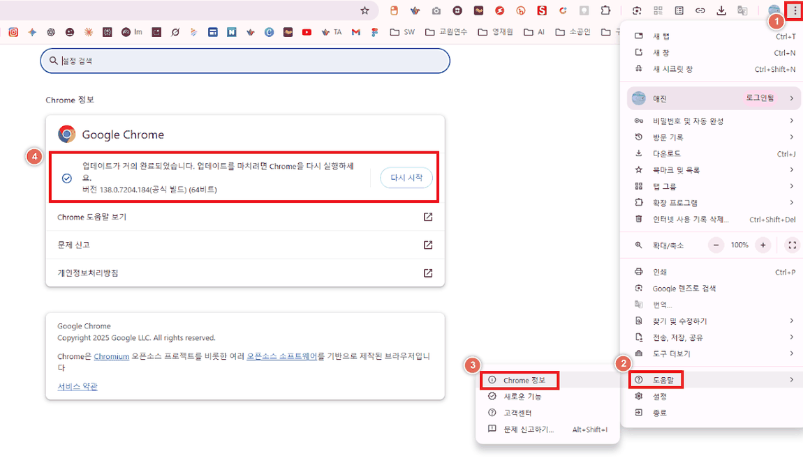
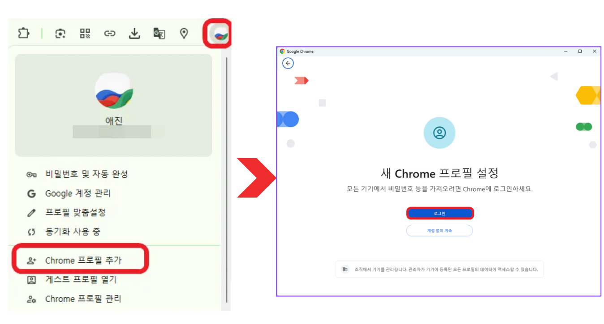
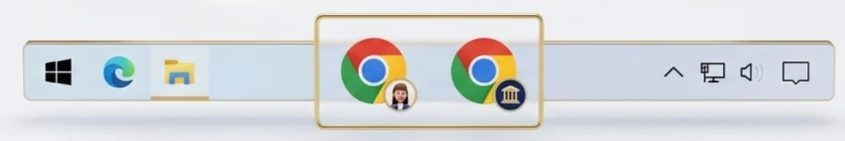
여기까지 하셨으면 충분합니다.
필수② 오늘 쓰는 제미나이는 네 군데에 있습니다
| 어디서 | 무엇을 | 오늘 단원 |
|---|---|---|
| 크롬 안 (제미나이 인 크롬) | 보고 있는 웹페이지·PDF·여러 탭에 바로 질문 | 1 · 2 |
| 제미나이 앱 (gemini.google.com) | 대화, 스킬, @로 지메일·드라이브·킵 불러오기 | 2 · 4 |
| 구글 워크스페이스 안 (폼·시트·문서·지메일) | 각 화면의 ✦ 버튼으로 그 자리에서 도움받기 | 3 · 4 |
| 휴대폰 (제미나이 앱·구글 렌즈) | 카메라로 보여 주며 묻기, 말로 대화하기 | 5 |
🔥 워밍업 게임
본격 시작 전, 가볍게 손을 푸는 시간! 게임 카드를 뒤집어 단축키를 재미있게 익혀요.
문장을 드래그 → Ctrl+C로 복사하고, 칸을 클릭해 Ctrl+V! 5문제 완성 🏁
원본 전체를 Ctrl+A로 선택해 복사·붙여넣기 하거나, Ctrl+A → Delete로 싹 지우기! 5문제 완성 🏁
아래 이모지를 캡처해서 칸에 Ctrl+V! 이모지가 바뀌며 5장 도전 📸 캡처 키는 브라우저가 못 봐서, 붙여넣기까지 해야 성공!
→ 원하는 부분 드래그
→ 칸에 Ctrl+V
→ 캡처 도구
→ + 새 캡처
→ 드래그
→ Ctrl+V
→ 전체화면 캡처
→ 칸에 Ctrl+V
(윈도우10은 안 돼요)
PrtSc가 안 될 때 — 눌러서 펼치기
① 윈도우11(최신) : PrtSc를 누르면 캡처도구가 먼저 떠요 → 뜬 화면에서 영역을 드래그해야 복사돼요. (설정 → 접근성 → 키보드 → “화면 캡처 키로 캡처 도구 열기” 끄면 예전처럼 전체화면 즉시 복사)
② 노트북 : PrtSc가 그냥 안 되면 Fn + PrtSc. Insert와 한 키에 있으면 Fn이 꼭 필요해요.
③ 그래도 안 되면 : OneDrive가 PrtSc를 가로챈 거예요 → OneDrive 설정 → 백업 → “스크린샷 저장” 끄기.
→ 제일 확실한 건 그냥 Win + Shift + S!
![캡처 단축키 — 윈도우+Shift+S vs PrtSc]()
0+ 크롬 잘쓰기 · 그동안 10%만 쓰셨습니다
제미나이보다 먼저, 매일 쓰는 크롬을 제대로 잡는 시간이에요. 항목을 눌러 펼치고 하나씩 따라 해 보세요.
- ⓪ ⚙️ 시작 전 필수 — 크롬 최신으로필수▾🔴 이것부터 하고 시작합니다. 1단원 「제미나이 인 크롬」은 최신 크롬에서만 나타나요.삼점 ⋮ → 도움말 → Chrome 정보 → 최신 버전 확인🔴 ［다시 시작］까지 꼭 누르세요.삼점 ⋮ → 설정 → 기본 브라우저 → Chrome으로
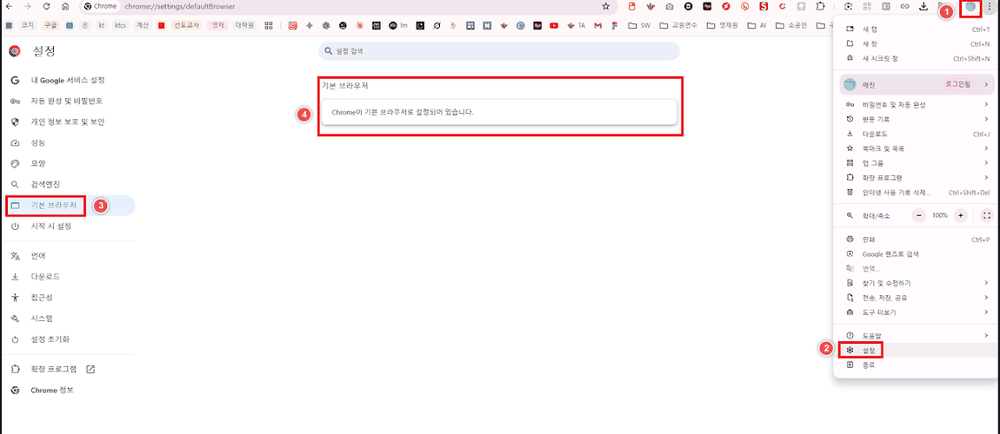
🔴 “Chrome이 기본 브라우저로 설정되어 있습니다”가 보이면 됩니다.삼점 ⋮ → 설정 → 검색엔진 → Google로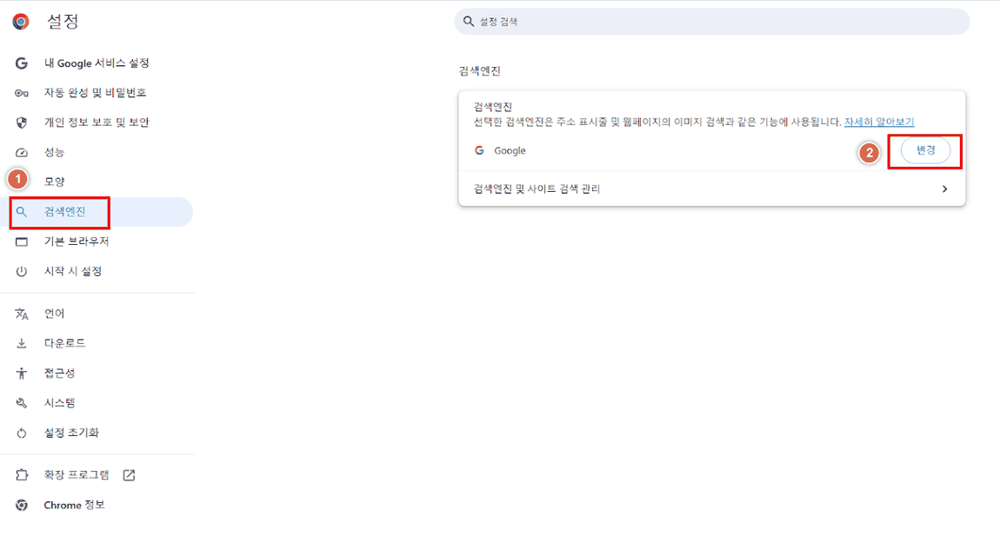
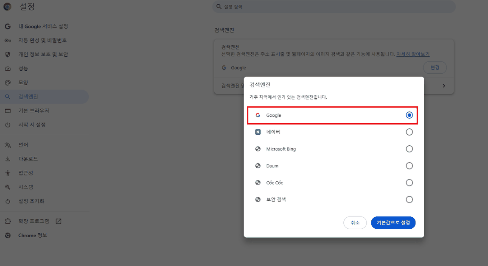
🔴 Google을 고르고 ［기본값으로 설정］까지 누르세요. - ① 로그인 제대로 하기 — 개인계정 · 기관계정 프로필 분리▾
- 기본 중의 기본이지만 놓치기 쉬운 부분 — 보안과 자료 관리에서 중요합니다
- 준비물: 개인계정과 기관계정 2개를 미리 준비해 오세요
- 크롬 오른쪽 위 프로필 아이콘 → ‘크롬(Chrome) 프로필 추가’로 계정별 프로필 만들기
- 계정별 프로필 사진 변경 / 테마 색상으로 구분 → 어느 계정인지 한눈에🙂 프로필 사진 만들기 (Notion Faces)
- 계정별 바탕화면 바로가기 만들기
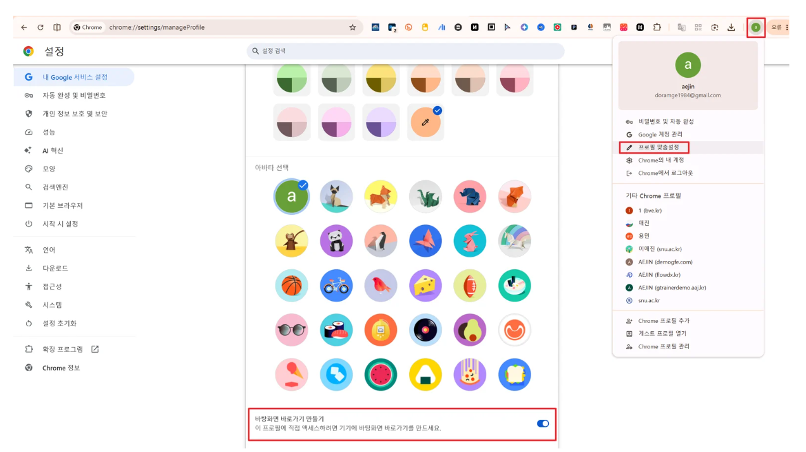
- ② 초간단 즐겨찾기 + 파비콘 만들기▾
- 미션: 웹교안 · 제미나이 · 내가 자주 가는 사이트를 즐겨찾기 하고 아이콘(파비콘)만 3개 남기기
- 주소창 오른쪽 별표(☆)로 즐겨찾기 대신 추파춥스(?) 활용하기!
- 북마크에 마우스 우클릭 → 수정 → 이름 지우기 → 아이콘(파비콘)만 남아 깔끔하고 빠르게 접속
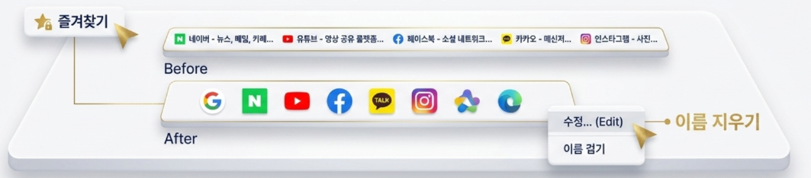
🔎 즐겨찾기바가 안 보이면 — 네 가지 방법▾
- 주소창에 붙여넣기 (가장 확실) — 아래 주소를 주소창에 넣고 Enter → ［북마크바 표시］ 켜기🔗chrome://settings/appearance단축키도 메뉴 찾기도 필요 없어요.
- 새 탭 열어보기 — Ctrl+T. 크롬은 새 탭 화면에서는 즐겨찾기바를 자동으로 보여줍니다. 거기서 우클릭 → ［북마크바 표시］를 켜면 모든 화면에서 보여요
- 메뉴로 — 오른쪽 위 ⋮ → 북마크 및 목록 → ［북마크바 표시］
- 단축키 — Ctrl+Shift+B (갤럭시북에서는 안 될 수 있어요 — 아래 참고)
💡 "안 보인다"는 분의 절반은 그냥 일반 페이지에 계신 겁니다. 새 탭부터 한번 열어보시게 하세요.⌨️ Ctrl+Shift+B를 눌러도 안 될 때 — 삼성 갤럭시북이라면
갤럭시북에는 삼성 앱이 이 단축키를 먼저 가져가는 경우가 있어요. 눌러도 즐겨찾기바는 안 나오고 엉뚱한 창이 뜨거나 아무 반응이 없다면 이 경우입니다.✅ 급할 땐 이것만 — 단축키를 안 쓰면 됩니다- 주소창 바로 아래 빈 곳에서 마우스 우클릭 → ［북마크바 표시］
- 또는 오른쪽 위 ⋮ → 북마크 및 목록 → ［북마크바 표시］
🔴 이 방법은 어느 노트북에서든 됩니다. 연수 중이라면 여기까지만 하고 넘어가세요. 아래는 연수 끝나고 천천히 하시면 됩니다.1단계 · 범인부터 확인 (빅스비 잠시 끄기)- 화면 우측 하단 작업 표시줄(시계 옆)에서 ∧ (숨겨진 아이콘 표시) 화살표 클릭
- 파란색 Bixby 아이콘을 마우스 오른쪽 버튼으로 클릭 → ［종료］ 선택
- 크롬으로 돌아가 Ctrl+Shift+B를 눌러 봅니다
💡 여기서 즐겨찾기바가 나왔다면 범인은 빅스비입니다 → 2단계로 가세요.
그래도 안 되면 빅스비가 아닙니다. 다른 삼성 앱일 수 있으니 붙들지 마시고 위의 우클릭 방법을 쓰세요.💡 메뉴 이름이 ［종료］가 아니라 ［끝내기］로 보일 수도 있어요. 같은 뜻입니다.2단계 · 영구 해결 (시작 프로그램에서 제외)- Ctrl+Shift+Esc를 눌러 작업 관리자를 엽니다
- 왼쪽 메뉴에서 ［시작 앱］ 탭을 클릭합니다 (속도계 모양 아이콘)
- 목록에서 Bixby를 찾아 우클릭 → ［사용 안 함］
- PC를 다시 시작하면 그다음부터는 충돌이 없습니다
⚠️ 시작 앱에서 끄면 빅스비 음성 호출도 안 됩니다. 빅스비를 쓰신다면 1단계만 하시고, 필요할 때마다 종료해 주세요.💡 업무용 PC라 설정이 잠겨 있다면 맨 위의 우클릭 방법을 쓰세요. 결과는 똑같습니다. - ③ 즐겨찾기 폴더로 정리 (수업 · 연구 · 행정)▾매일 들어가는 곳은 정해져 있죠 — LMS, 학사정보시스템, 논문 검색 사이트. 즐겨찾기바에 업무별 폴더를 만들어 두면 그 안에 다 들어갑니다. 한 번 만들면 계속 쓰고, 로그인만 하면 다른 PC에서도 따라옵니다.즐겨찾기바 빈 곳 우클릭 → 폴더 추가 → 이름 입력 → 저장
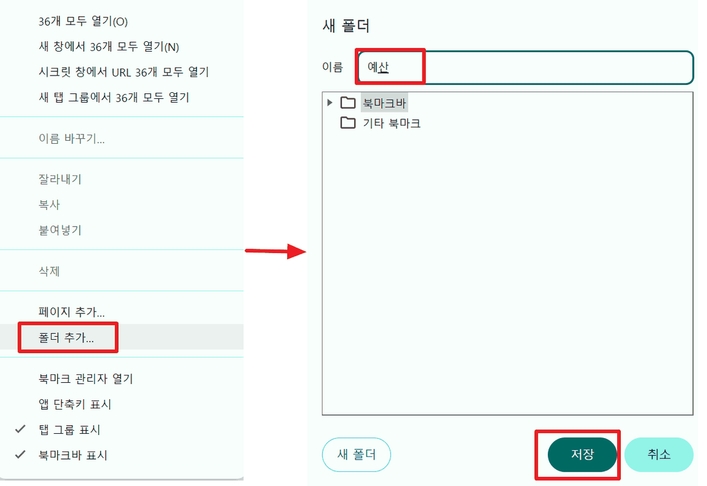
🔴 저장 위치는 ［북마크바］로 두세요. 그래야 화면 위에 바로 보입니다.이렇게 즐겨찾기바에 폴더가 생깁니다.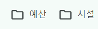
▲ 이런 식으로 업무별 폴더를 나란히 만들어 두고, 그 안에 사이트를 넣으면 됩니다.- 같은 방법으로 수업 · 연구 · 행정 세 폴더를 만듭니다 (그림의 폴더 이름은 예시예요)
- 자주 가는 사이트를 연 뒤 주소창 오른쪽 ★(별표) 클릭 → 폴더를 골라 저장
- 이미 있는 즐겨찾기는 마우스로 끌어다 폴더에 넣으면 됩니다
- 폴더를 누르면 그 안의 사이트가 쭉 펼쳐집니다
➕ 이렇게 묶어 보세요수업 — LMS · 학사정보시스템 · 강의계획서 · 오늘 웹교안
연구 — RISS · KCI · 구글 스칼라 · 도서관 전자자료 · 한국연구재단
행정 — 학교 홈페이지 공지 · 그룹웨어 · 학과 드라이브 · 법제처(학칙·규정)💡 폴더 하나에 10개 넘게 들어가면 다시 찾기 어려워집니다. 많아지면 폴더 안에 폴더를 하나 더 만드세요.📦 만든 즐겨찾기를 다른 계정으로 옮기기 — 개인계정 ↔ 기관계정▾
즐겨찾기는 계정마다 따로 놉니다. ①에서 나눠 둔 개인계정 프로필과 기관계정 프로필은 서로 즐겨찾기가 안 보여요. 파일 하나로 통째로 옮기면 됩니다.1단계 · 원래 계정에서 내보내기- 즐겨찾기가 있는 그 프로필의 크롬을 엽니다
- Ctrl+Shift+O — 북마크 관리자가 열립니다
(또는 ⋮ → 북마크 및 목록 → 북마크 관리자) - 관리자 화면 오른쪽 위 ⋮ → ［북마크 내보내기］
- 바탕화면에 저장 — bookmarks_2026….html 파일이 생깁니다
💡 이 HTML 파일 하나에 폴더 구조까지 통째로 들어 있어요. 메일로 보내거나 USB에 담아도 됩니다.2단계 · 받을 계정에서 가져오기- 오른쪽 위 프로필 아이콘을 눌러 받을 계정의 프로필로 전환
- 다시 Ctrl+Shift+O → 오른쪽 위 ⋮ → ［북마크 가져오기］
- 방금 저장한 HTML 파일을 고르면 끝
⚠️ 가져온 즐겨찾기는 「가져온 북마크」 폴더 안에 들어갑니다. 즐겨찾기바에 바로 안 보인다고 당황하지 마세요 — 그 폴더를 열어 마우스로 끌어다 북마크바로 옮기시면 됩니다.💡 같은 계정을 다른 PC에서 쓰는 거라면 이 과정이 필요 없어요. 그 PC 크롬에 로그인만 하면 즐겨찾기가 따라옵니다. 이건 계정이 다를 때 쓰는 방법이에요.🧹 두 번 가져오면 똑같은 게 두 벌이 됩니다. 중복이 생기면 북마크 관리자에서 지워 주세요. - ④ 한방에 큐알코드 만들기 (크롬 / 엣지 다 가능)▾
- 아직도 네이버 큐알 쓰시나요? 한방에 큐알코드 만드는 2가지 방법
- 방법 ① 마우스 우클릭 — 페이지에서 우클릭 → ‘이 페이지의 QR 코드 만들기’ (크롬·엣지 기본 기능)
- 방법 ② 크롬 확장 프로그램 — QR Code Generator 설치 후 클릭 한 번
🔳 QR Code Generator 설치
📌 수업에 바로 쓰기 — 폼·예약 링크를 QR로- 3단원에서 만든 폼의 응답 링크(또는 4단원의 면담 예약 페이지)를 크롬에서 엽니다.
- 페이지에서 마우스 오른쪽 클릭 → 이 페이지의 QR 코드 만들기(또는 주소창의 공유 아이콘 → QR 코드).
- 다운로드를 눌러 저장하고, 강의 슬라이드 첫 장에 넣습니다.
휴대폰 카메라로 화면의 QR을 비추면 폼이 바로 열리는지 확인해 보세요.
여기까지 하셨으면 충분합니다.
- ⑤ 캡처, 이렇게 하세요▾
- 캡처 단축키: ⊞ Win + Shift + S — 또는 더 간단하게 PrtSc
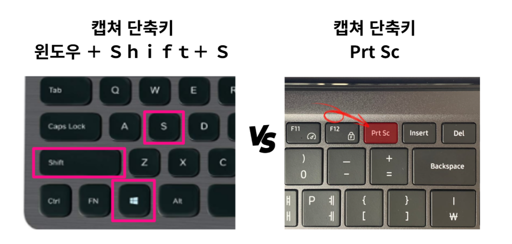
- 캡처 도구로 텍스트 복사가 되는 거 아세요? — 캡처한 이미지 속 글자를 바로 복사
- 더 편한 방법? → 다음 항목 구글 렌즈로 이어집니다
- 캡처 단축키: ⊞ Win + Shift + S — 또는 더 간단하게 PrtSc
- ⑤-1 (＋더 나아가기) 스크롤 캡처·편집이 편한 픽픽(PicPick)▾픽픽은 연수 중 시간이 허락하면 설치해 실습합니다.
- ① 스크롤 캡처 — 긴 페이지를 한 장으로 쭉!
- ② 동영상 녹화 가능
- ③ 캡처 이미지에 모자이크 처리 · 번호 순서 자동 매기기 등 다양한 편집 기능
- 설치 파일 내려받기 →
🖼️ 픽픽(PicPick) 다운로드
- ⑥ 구글 렌즈 — 화면 속 글자·이미지를 바로 활용 (엣지 X / 크롬 O)▾관련 내용(웹·이미지 등)을 오른쪽 창에서 바로 확인할 수 있어요.1. 텍스트 복사
화면 속 글자를 복사 → doc.new로 구글 독스를 열어 붙여넣어 잘 됐는지 확인
📄 이 안내문의 글자를 캡처해서 복사해 보세요!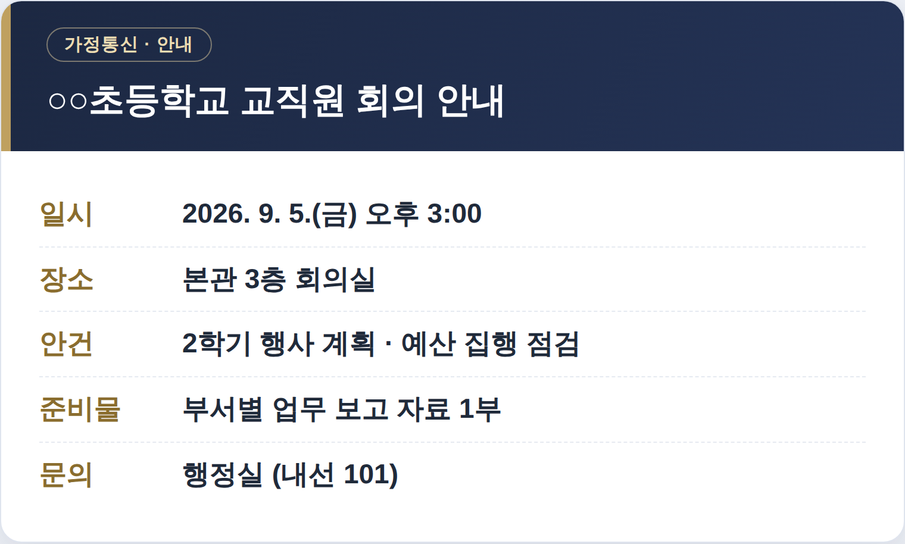
2. 이미지로 복사복사한 이미지를 PPT·캔바 등 어디든 붙여넣기(캡처 불필요) → slide.new로 구글 슬라이드에서 확인
3. 번역화면 속 외국어를 바로 번역
🌍 이 외국어 간판을 캡처해서 번역해 보세요!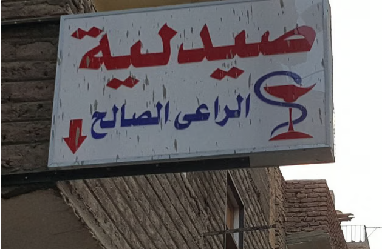
안 읽히는 글자도 있어요. 그럴 땐 결국 사람이 확인해야 한다는 것도 함께 알아두세요.💡 구글 렌즈가 안 뜨면? ① 크롬인지 확인(크롬만 됩니다, 엣지 X) · ② ⋮ → 도움말 → Chrome 정보 → 최신으로 업데이트 · ③ 그래도 안 되면 ⋮ → 설정 → 검색엔진을 ‘Google’로📐 이 수학 문제를 캡처해서 구글 렌즈·제미나이로 풀어보세요!
자녀가 가져온 문제도 이렇게 찍어서 풀이를 받아볼 수 있어요.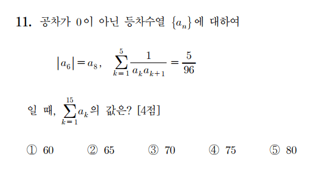
📥 교수님용 연습 이미지 — 스캔 논문 표 · 영문 학회 포스터📥 연습용 이미지PC에서는 이미지를 크롬에서 열어 오른쪽 클릭 → Google 렌즈로 검색. 휴대폰으로는 모니터 화면을 그대로 찍어도 됩니다. 표는 “시트에 붙여넣을 수 있게 표로”, 포스터는 “마감일만 한국어로”라고 이어서 물어보세요.
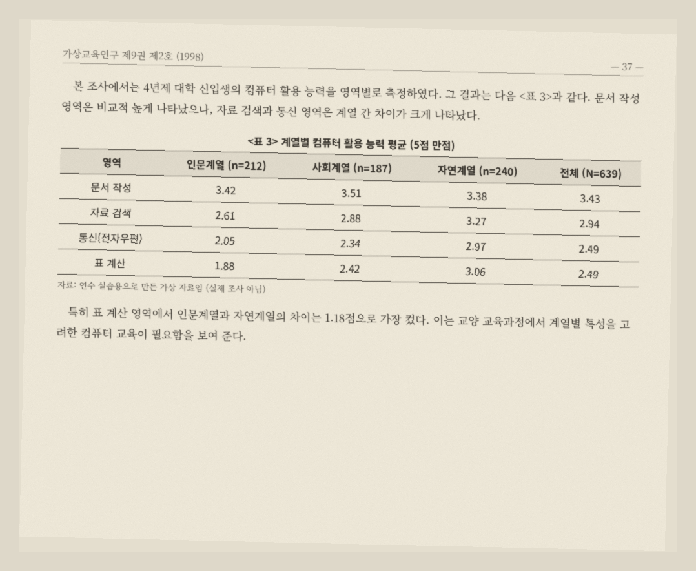
스캔본처럼 기울고 흐린 표 — 숫자를 텍스트로 옮겨 보세요 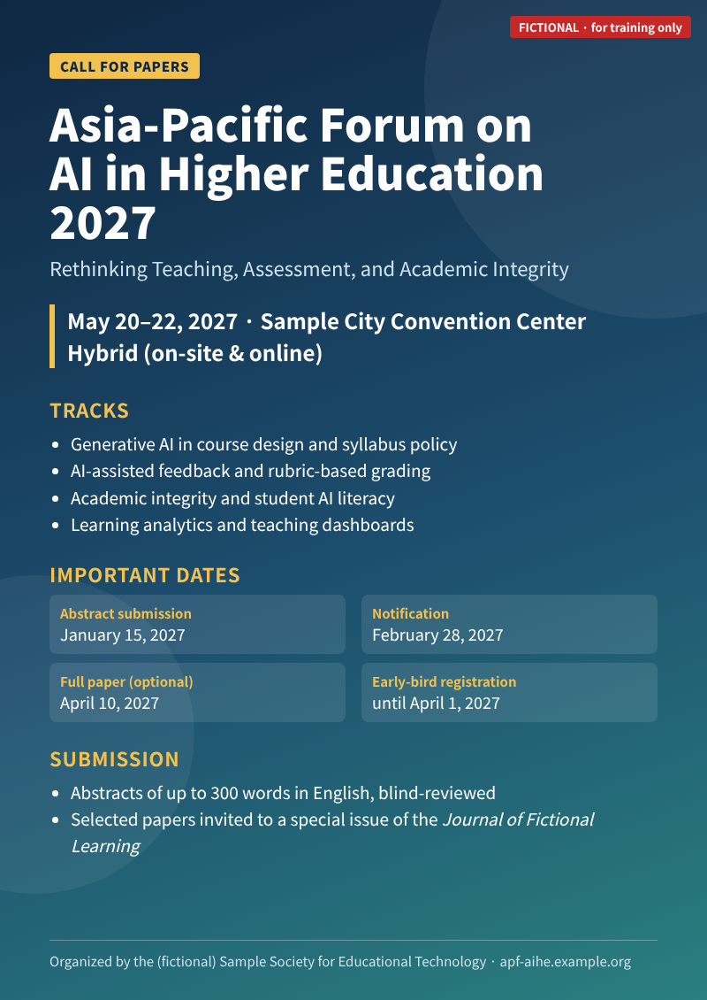
영문 포스터 — 번역과 일정 등록 연습용 - ⑦ 모바일 구글 렌즈▾📱 아래 화면은 갤럭시(삼성)폰 기준이에요. 아이폰도 다 됩니다 — 들어가는 길만 조금 달라서, 맨 아래 ［🍎 아이폰에서는 이렇게］에 따로 정리해 뒀어요.
- 휴대폰 구글 앱 · 크롬에서 카메라/이미지로 글자·사물·번역을 바로 인식
📱 휴대폰에서 구글 렌즈 쓰는 법 보기
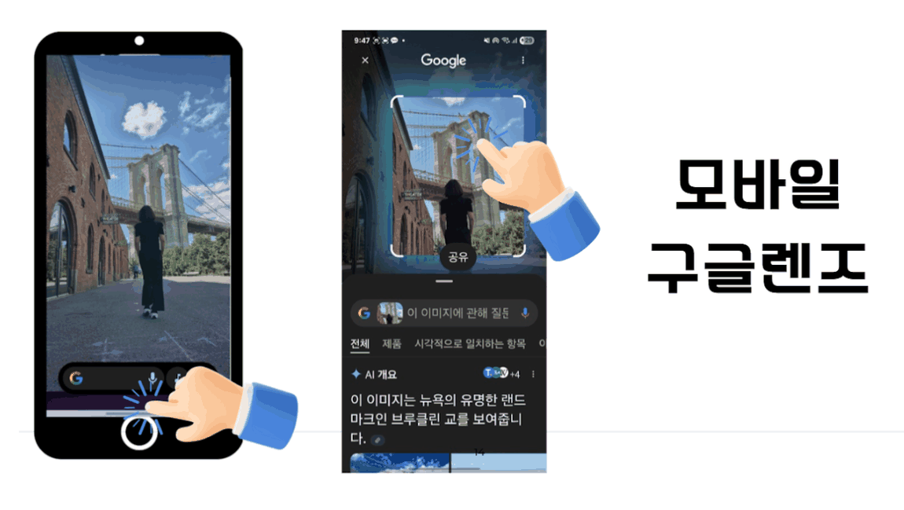
▲ 카메라·사진에서 바로 — 구글 앱 검색창의 렌즈 아이콘을 누르고 찍거나 사진을 고르면, 그 자리에서 AI 개요로 무엇인지 알려줍니다.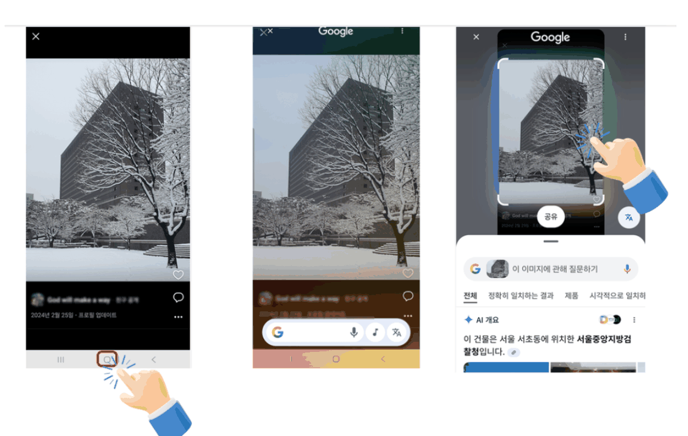
▲ 지금 보고 있는 화면 그대로 — 앱을 벗어나지 않고 하단 검색(렌즈) 버튼을 누르면 화면 속 사물을 바로 찾아줍니다. 캡처해서 옮길 필요가 없어요. - 스마트폰으로 QR코드를 촬영해보자!
- ① 갤러리에서 이미지 꾹 눌러 링크 들어가기
- ② 스마트폰에 저장된 QR 이미지로 링크 들어가기
📷 QR 촬영해서 링크 여는 방법 보기
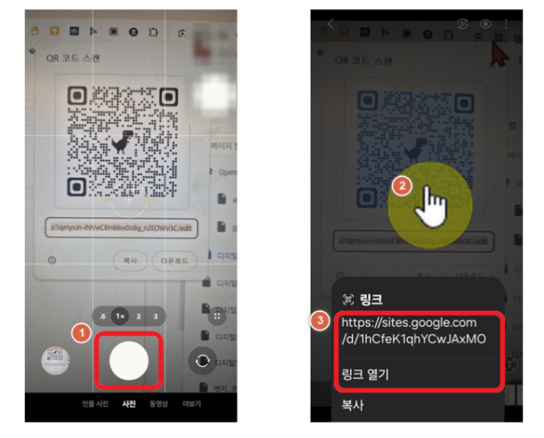
▲ ① 카메라로 QR을 찍고 → ② 화면을 꾹 누르면 → ③ ［링크 열기］가 떠요. - 현장 사진 속 글자 추출, 실물 번역 등 밖에서도 그대로 활용
➕ 현장에서 이렇게 씁니다시설 점검 중 부품 사진을 찍어 무엇인지 찾기 · 외국어 안내문·라벨 번역 · 종이 서류 속 글자를 찍어 텍스트로 꺼내기🍎 아이폰에서는 이렇게 — 구글 렌즈 쓰는 3가지 길▾
아이폰에는 갤럭시의 “화면 그대로 검색” 버튼이 없어요. 대신 구글 앱과 크롬 앱으로 똑같이 할 수 있습니다. 앱스토어에서 「Google」과 「Chrome」을 먼저 설치해 두세요.① 카메라로 바로 — 가장 많이 씁니다- Google 앱을 엽니다
- 검색창 오른쪽 렌즈 아이콘(📷)을 누릅니다
- 비추고 촬영 → 글자·사물·번역 결과가 바로 나옵니다
💡 홈 화면에 Google 위젯을 올려 두면 앱을 열 필요 없이 위젯의 렌즈 아이콘을 바로 누를 수 있어요.② 사진첩에 있는 사진으로- 같은 렌즈 아이콘을 누릅니다
- 화면 아래 사진 선택 도구를 눌러 사진첩에서 고릅니다
- 공문·안내문을 찍어 둔 사진에서 글자만 뽑아 쓸 수 있어요
💡 화면을 캡처해서 쓰면 “화면 검색”이 됩니다. 아이폰은 전원 버튼 + 볼륨 위를 동시에 눌러 캡처 → 그 사진을 위 방법으로 불러오면 돼요.③ 웹에서 본 이미지 바로크롬 앱으로 웹을 보다가 이미지를 꾹 길게 누르면 ［Google로 이미지 검색］이 뜹니다. 캡처할 필요 없이 그 자리에서 검색돼요.⚠️ 아이폰 기본 브라우저(사파리)에서는 안 됩니다. 구글 렌즈는 Google 앱이나 크롬 앱 안에서만 동작해요. 설치가 안 돼 있으면 먼저 받아 주세요. - 휴대폰 구글 앱 · 크롬에서 카메라/이미지로 글자·사물·번역을 바로 인식
- ⑧ 전체 글 가져오기 (복사 허용)▾
- 구글 렌즈는 일부 글만 잡히고 전체 글은 안 긁히는 단점이 있어요
- 복사 허용(Allow Copy) 확장 프로그램이면 복사가 막힌 사이트에서도 전체 글을 쏙 복사
📋 복사 허용 설치 - 여기서 직접 해보세요 — 아래 글을 열고 먼저 그냥 복사해 보세요. 그다음 확장을 켜고 다시 복사해 보면 차이가 바로 느껴집니다
📄 실습용 글 열기 — 네이버 블로그 →
💡 복사가 되는 글도 있고 안 되는 글도 있어요. 막혀 있으면 확장 아이콘을 눌러 켠 뒤 새로고침하고 다시 시도하세요.⚠️ 가져온 글은 참고용입니다. 남이 쓴 글을 그대로 옮겨 쓰면 안 되고, 출처를 밝히거나 내 문장으로 바꿔 쓰셔야 합니다. - ⑨ 툴바 설정 (분할뷰 · 큐알코드 · 구글 렌즈 등)▾
- 자주 쓰는 기능(분할뷰 · 큐알코드 · 구글 렌즈 등)을 툴바에 꺼내두면 클릭 한 번으로 사용
- 설정: 툴바 빈 곳 우클릭 → 도구 모음 맞춤설정(또는 ⋮ 메뉴)에서 원하는 도구 켜기
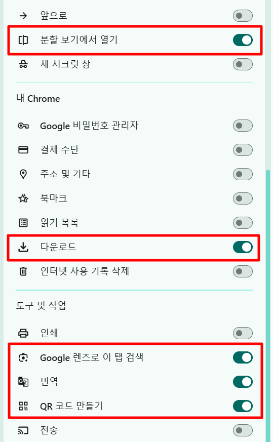
▲ 켜 두면 좋은 것 네 가지 — 분할 보기에서 열기(자료 보며 문서 작성) · Google 렌즈로 이 탭 검색 · 번역 · QR 코드 만들기. 나머지는 꺼 두면 툴바가 깔끔해요.➕ 순서도 바꿀 수 있어요맨 아래 안내처럼 툴바의 버튼을 마우스로 끌어 자주 쓰는 것을 왼쪽으로 옮겨 두세요. - ⑩ 시크릿 모드 vs 게스트 모드▾
- 시크릿 모드 = ‘나’를 위한 보호 — 공용 PC에 내 흔적을 남기고 싶지 않을 때, 내가 만든 웹사이트 확인용
- 게스트 모드 = ‘남’을 위한 배려 — 내 컴퓨터를 학생·동료에게 잠시 빌려줄 때, 내 정보를 전혀 안 보여주고 빌려주기
🕵️ 시크릿 모드 — 내 흔적을 안 남긴다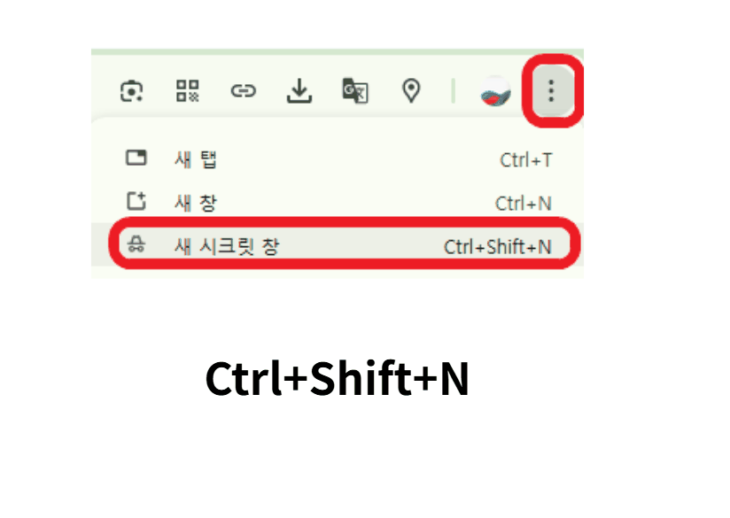
▲ 여는 법 — 오른쪽 위 ⋮ → ［새 시크릿 창］. 단축키는 Ctrl+Shift+N 입니다.➕ 업무에서 이럴 때공용 PC에서 잠깐 검색할 때 · 내가 만든 공고문·홈페이지가 남들 눈에 어떻게 보이는지 로그인 안 한 상태로 확인할 때 · 같은 사이트에 계정 두 개로 동시에 들어갈 때⚠️ 시크릿 모드가 “익명”은 아닙니다. 내 PC에 기록이 안 남을 뿐, 기관 네트워크와 접속한 사이트에는 그대로 남습니다.👤 게스트 모드 — 남에게 잠깐 빌려줄 때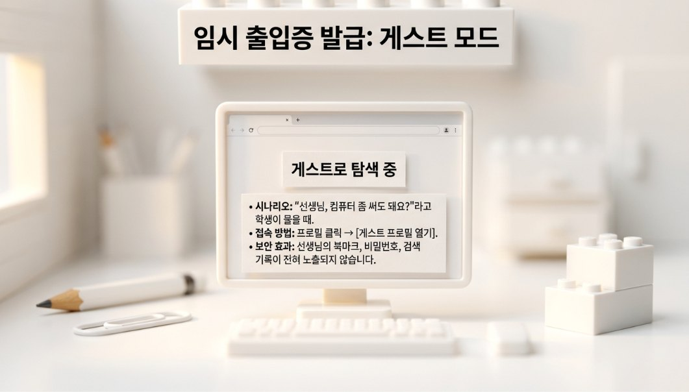
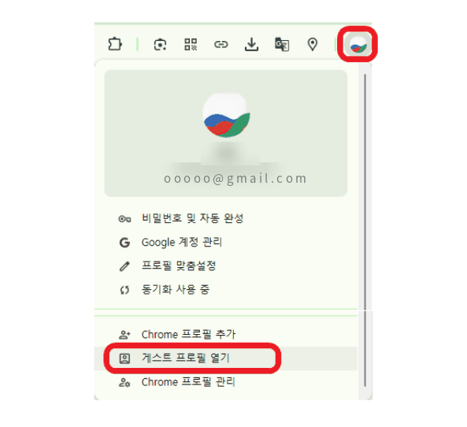
▲ 여는 법 — 툴바 오른쪽 프로필 아이콘 클릭 → ［게스트 프로필 열기］. 내 북마크·비밀번호·검색 기록이 전혀 안 보입니다.➕ 둘의 차이 한 줄시크릿은 내가 쓰면서 흔적을 안 남기는 것, 게스트는 남이 쓰게 하면서 내 것을 안 보여주는 것. 학생·동료에게 잠깐 빌려줄 땐 게스트가 맞습니다. - ⑪ 내 계정 삭제 vs 원격으로 기기 관리▾
- 상황: “내 컴퓨터가 아닌데 로그인하기가 꺼려져요” / “다른 기기 쓴 뒤 이 기기에서 제 아이디 완전 삭제해주세요”
- 내 계정 삭제: 브라우저 프로필 → 크롬 프로필 관리 → ⋮(삼점) → 삭제
- 원격으로 기기 관리: 브라우저 프로필 → 구글 계정 관리 → 기기 → 로그아웃
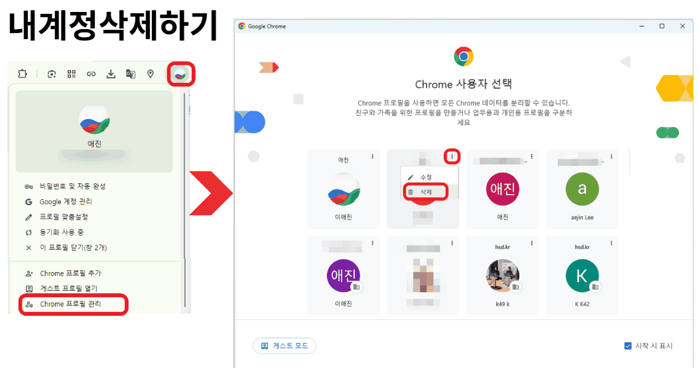
▲ 순서 — 툴바 오른쪽 프로필 아이콘 클릭 → 맨 아래 ［Chrome 프로필 관리］ → 지울 프로필 카드의 ⋮ → ［삭제］⚠️ 삭제하면 그 프로필의 북마크·기록이 이 PC에서 사라집니다. 동기화를 켜 두셨다면 계정에는 남아 있어 다시 로그인하면 돌아오지만, 동기화를 안 켰다면 복구되지 않습니다. 지우기 전에 한 번 확인하세요.➕ 남의 PC에서 썼다면 이게 더 확실합니다그 PC에서 프로필을 지우는 것과 별개로, 내 폰이나 다른 기기에서 구글 계정 관리 → 보안 → 내 기기로 들어가 원격 로그아웃까지 해 두세요.📱 원격으로 기기 관리 — 화면으로 보기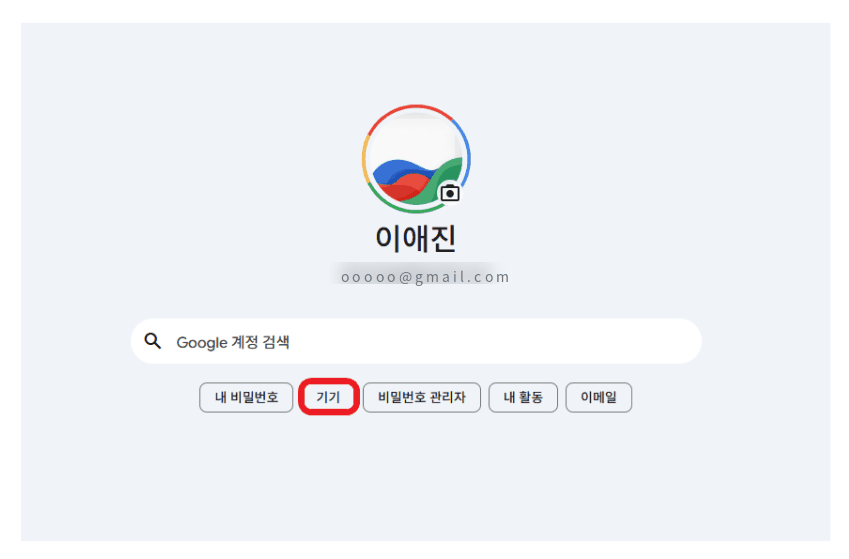
① 프로필 → ［Google 계정 관리］ → 검색창 아래 ［기기］를 누릅니다.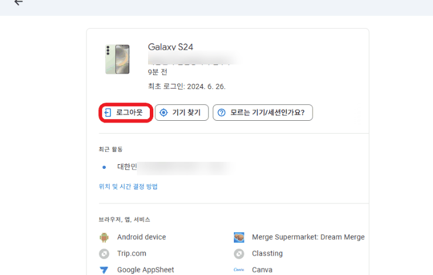
② 로그인돼 있는 기기 목록이 나옵니다. 지울 기기를 고르고 ［로그아웃］. 그 기기에서 내 계정이 바로 빠집니다.➕ 여기서 같이 보면 좋은 것기기마다 마지막 접속 위치·시각이 표시됩니다. 모르는 기기가 있으면 ［모르는 기기/세션인가요?］를 눌러 바로 조치하세요. 연수 끝나고 한 번은 훑어보시길 권합니다.⚠️ 공용 PC를 쓰셨다면 이게 마지막 안전장치입니다. 그 자리에서 로그아웃을 깜빡했어도, 내 폰에서 이 화면으로 들어가 끊어 버리면 됩니다. - ⑫ 말로 입력하기 — 타자 대신 목소리로▾
긴 지시문이나 초안은 말로 하는 편이 훨씬 빠릅니다. 받아 적은 글은 AI에게 다듬어 달라고 하면 됩니다.
어디서 어떻게 휴대폰 제미나이 앱 입력창의 🎤 마이크를 누르고 말한 뒤 보내기 PC 제미나이 (gemini.google.com) 입력창의 🎤 마이크 → 처음 한 번 마이크 허용 구글 문서 도구 → 음성 입력 (Ctrl+Shift+S) → 마이크를 눌러 말하기 · 크롬에서만 됩니다 ✋ 해 보기 휴대폰 제미나이 앱 마이크를 누르고 이렇게 말해 보세요. “다음 주 목요일 수업은 휴강하고, 보강은 기말고사 전 주 토요일 오전 10시에 온라인으로 한다는 공지를 학생들에게 정중하게 써줘.”받아 적은 글 다듬기 (구글 문서 음성 입력 후)아래는 내가 말로 받아 적은 글이야. 내용은 바꾸지 말고 맞춤법, 띄어쓰기, 문장부호만 고쳐줘. 고친 곳은 굵게 표시해줘. [받아 적은 글 붙여넣기]
PC에 마이크가 없으면 강의실 PC는 마이크가 없을 수 있습니다. 휴대폰 제미나이 앱으로 해 보세요. - ⑬ 제미나이 라이브 — 휴대폰으로 보여 주며 말로 묻기 (보너스)▾
- 휴대폰 제미나이 앱을 열고 입력창 옆 라이브 버튼(파형 모양)을 누릅니다.
- 말로 대화합니다. 말을 끊고 끼어들어도 됩니다.
- 카메라 버튼을 누르면 보이는 것을 함께 보며, 화면 공유를 누르면 휴대폰 화면을 보며 대화합니다.
해 볼 것 이렇게 말해 보세요 강의 리허설 “지금부터 3분 동안 ‘상관과 인과’를 설명할게. 끝나면 학생 입장에서 헷갈렸을 부분 두 가지만 말해줘.” 카메라로 묻기 (책상 위 자료를 비추며) “이 표에서 눈에 띄는 경향을 설명해줘.” 외국어 연습 “다음 주 국제학회 질의응답을 연습하고 싶어. 영어로 질문 하나씩 해줘.” 참고 강의실에서는 이어폰을 쓰시거나, 소리를 줄이고 화면 자막으로 보셔도 됩니다. 앱이 없으면 앱스토어·플레이스토어에서 Google Gemini를 설치합니다.
![[가상] 스캔된 옛 논문 표PNG](files/am/스캔논문_표_가상.png){kind=link}
![[가상] 영문 학회 포스터PNG](files/am/영문학회포스터_가상.png){kind=link}
1 제미나이 인 크롬
탭을 옮기지 않고, 지금 보고 있는 페이지 옆에서 제미나이에게 묻습니다. 논문 PDF, 공문, 강의계획서, 유튜브 영상까지 “보면서 묻는” 방식입니다.
실습① 제미나이 패널 열기 + 페이지 요약
- 실습용 공지 페이지 [가상] AI 활용 수업혁신 사례 공모 안내를 새 탭으로 엽니다. (아무 기사나 학과 공지 페이지로 하셔도 됩니다)
- 크롬 오른쪽 위의 ✦ Gemini 버튼을 누릅니다. 오른쪽에 패널이 열립니다.
- 아래 프롬프트를 붙여넣습니다.
이 페이지 내용을 교수 회의에서 30초 안에 보고할 수 있게 세 줄로 요약해줘. 날짜·숫자·기한은 빠뜨리지 말고, 페이지에 없는 내용은 덧붙이지 마.
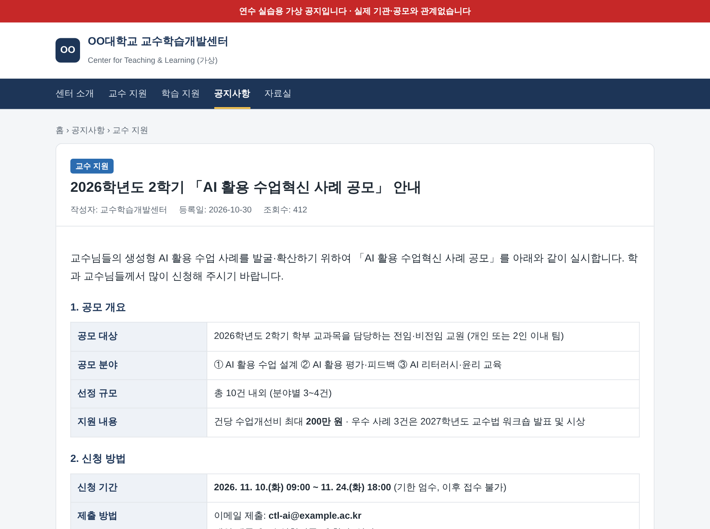
- 크롬에 로그인되어 있는지(0단원) 확인합니다. 시크릿 창에서는 작동하지 않습니다.
- 크롬을 최신으로 업데이트한 뒤 다시 시작합니다.
- 설정 → AI 혁신(또는 Gemini) 메뉴에서 켜져 있는지 확인합니다. 메뉴 이름은 업데이트로 바뀔 수 있습니다.
- 그래도 없으면 gemini.google.com에 페이지 주소나 내용을 붙여넣어 같은 질문을 하셔도 됩니다.
실습② PDF에 질문하기 — 강의계획서·논문
PDF 파일을 크롬 창에 끌어다 놓으면 크롬에서 열립니다. 그 상태로 제미나이 패널에 질문합니다.
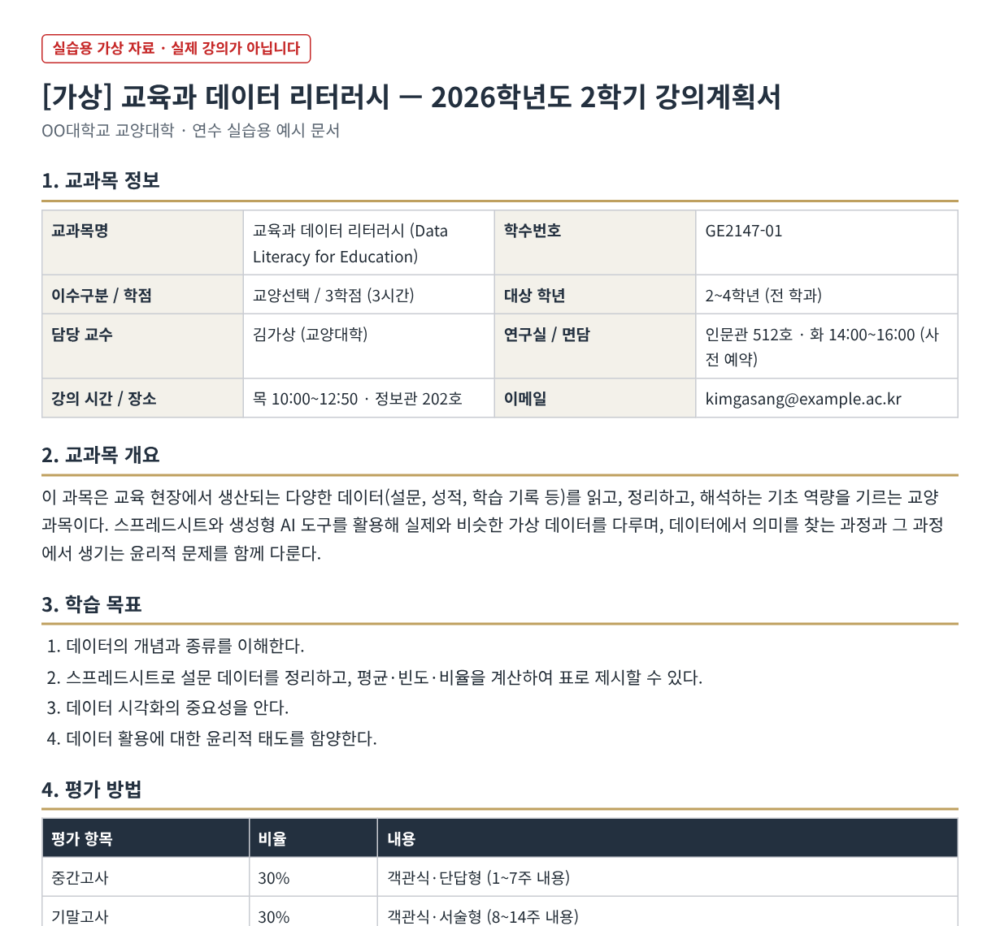
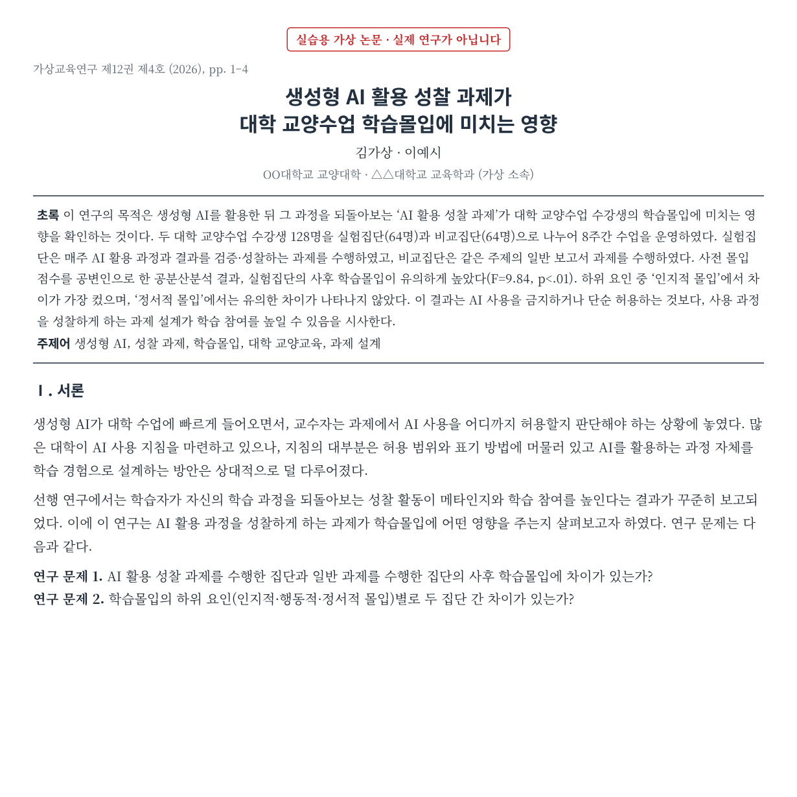
- 내 강의계획서 PDF 또는 내 분야 논문 PDF 하나를 크롬 창에 끌어다 놓습니다. (한글 파일은 한글에서 다른 이름으로 저장 → PDF)
- 제미나이 패널에서 아래 카드 중 하나를 고릅니다.
이 강의계획서를 점검해줘. 1) 학습목표가 관찰·측정할 수 있는 동사로 쓰였는지 2) 학습목표와 평가 방법이 서로 연결되는지 3) 생성형 AI 사용 기준이 학생에게 분명하게 안내되어 있는지 항목별로 '잘된 점 / 고칠 점 / 고친 예시 문장'을 표로 보여줘. 문서에 없는 내용은 추측하지 말고 '문서에 없음'이라고 적어줘.
이 논문의 연구 질문, 연구 방법(대상·도구·분석), 핵심 결과, 한계를 표로 정리해줘. 각 항목 옆에 근거가 되는 쪽수나 문장을 짧게 인용해줘.
여기까지 하셨으면 충분합니다.
실습③ 여러 문서 대조하기 — 탭 두 개 비교
제미나이 인 크롬은 열어 둔 여러 탭을 함께 보고 비교할 수 있습니다. 작년과 올해 강의계획서, 두 기관의 공고문, 두 논문의 방법 비교에 쓰입니다.
- 아래 두 실습 자료를 각각 새 탭으로 엽니다. (가상 강의계획서입니다)
- 제미나이 패널의 입력창 옆 ＋(탭 추가)를 눌러 두 탭을 모두 선택합니다.
- 아래 프롬프트를 보냅니다.
선택한 두 강의계획서를 비교해서 바뀐 점을 표로 정리해줘. 열은 '항목 / 2025-2 / 2026-2 / 무엇이 달라졌나'로 해줘. 마지막에 학생에게 안내해야 할 변경 사항 3가지를 한 문장씩 써줘.
- 정부·재단 공모 공고 두세 개를 열어 “지원 자격·마감·예산 한도”를 한 표로
- 같은 주제 논문 세 편을 열어 “연구 대상과 방법” 비교표로
- 학과 규정 개정 전후 문서를 열어 “바뀐 조항만” 뽑기
여기까지 하셨으면 충분합니다.
강사 시연보너스④ 유튜브 강연 정리 · 지메일 초안 · 캘린더 등록 (시간이 되면)
유튜브 영상을 연 채로 패널에 질문하면 영상 내용을 정리해 줍니다. 페이지를 벗어나지 않고 지메일 초안을 쓰거나 일정을 캘린더에 넣는 것도 됩니다.
Sal Khan · AI는 교육을 망칠까, 살릴까 (TED 2023, 약 15분) 칸 아카데미 창업자가 AI 튜터의 가능성과 걱정을 함께 다뤄요. 영상을 연 채로 패널에 아래 프롬프트를 보내 보세요.
이 영상의 핵심 주장 3가지를 시간대와 함께 정리하고, 내 수업 '대학 글쓰기'에서 토론 질문으로 쓸 만한 질문 2개를 만들어줘.
학과별로 골라 보기 해외 강연 4편
Vinciane Beauchene · AI가 내 일자리를 가져갈까? 질문이 틀렸다 (TED 2025)
어울리는 학과: 경영학과 · 취업팀 · 산학협력단
이 영상의 핵심 주장 3가지를 시간대와 함께 정리하고, 내 수업 '진로와 직업 탐색'에서 토론 질문으로 쓸 만한 질문 2개를 만들어줘.
Eran Segal · 사람에게 가장 좋은 식단은? (TEDxRuppin)
어울리는 학과: 식품영양학과
이 영상의 핵심 주장 3가지를 시간대와 함께 정리하고, 내 수업 '영양과 건강'에서 토론 질문으로 쓸 만한 질문 2개를 만들어줘.
Randi Williams · AI에 질문하는 아이로 키우기 (TED 2025)
어울리는 학과: 아동학과 · 휴먼케어평생교육학과
이 영상의 핵심 주장 3가지를 시간대와 함께 정리하고, 내 수업 '아동 발달과 미디어'에서 토론 질문으로 쓸 만한 질문 2개를 만들어줘.
Refik Anadol · 기계 지능 시대의 예술 (TED)
어울리는 학과: 시각디자인학과 · 미술만화게임학부 · 연기예술학과
이 영상의 핵심 주장 3가지를 시간대와 함께 정리하고, 내 수업 '디지털 미디어 디자인'에서 토론 질문으로 쓸 만한 질문 2개를 만들어줘.
영어 자막이 있는 영상이라 시간대가 잘 잡혀요. 아래 기본 프롬프트의 [과목명]만 내 과목으로 바꿔 쓰세요.
이 영상의 핵심 주장 3가지를 시간대와 함께 정리하고, 내 수업 '[과목명]'에서 토론 질문으로 쓸 만한 질문 2개를 만들어줘.
이 메일에 나온 행사 일시와 장소로 내 구글 캘린더에 일정을 추가해줘. 추가하기 전에 날짜와 시간을 나에게 먼저 확인받아줘.
A. 내 지메일로 해 보기 (실감 나요) 아래 가상 메일을 복사해 내 메일 주소로 나에게 보내기 → 지메일에서 그 메일을 연 채로 위 프롬프트를 보내요.
제목: [교수학습지원센터] 2026-2 AI 수업혁신 워크숍 참석 안내 (연습용 가상 메일) 교수님, 안녕하십니까. 교수학습지원센터입니다. 2026학년도 2학기 AI 수업혁신 워크숍을 아래와 같이 운영하오니 많은 참석 부탁드립니다. - 일시: 2026년 11월 19일(목) 15:00 ~ 17:00 - 장소: 정보관 2층 세미나실 - 대상: 전임교원 및 강의 담당 교원 - 신청: 11월 13일(금)까지 회신 메일로 신청 - 준비물: 노트북 (개인 구글 계정 로그인) ※ 워크숍 결과 공유회는 12월 3일(목) 16:00에 같은 장소에서 열릴 예정입니다. 감사합니다. 교수학습지원센터 드림
B. 바로 해 보기 메일 화면처럼 꾸민 가상 메일 페이지를 열고 위 프롬프트를 보내요.
볼 것: 워크숍(11월 19일 목 15:00~17:00, 정보관 2층 세미나실)만 넣는지, 결과 공유회(12월 3일)도 넣을지 먼저 물어보는지, 신청 마감(11월 13일)을 따로 할 일로 제안하는지 보세요. 연습이 끝나면 캘린더에서 지워 주세요.
실습⑤ 자주 쓰는 지시는 스킬로 저장 · /로 부르기
제미나이 인 크롬 패널에서 매번 길게 쓰던 지시문을 스킬로 저장해 두면, 어느 페이지에서든 입력창에 /만 눌러 다시 불러 보고 있는 페이지에 그대로 적용할 수 있어요. (제미나이 앱의 @ 스킬은 다음 탭에서 다뤄요)
- 위 ①~④에서 쓴 프롬프트 중 마음에 들었던 것을 제미나이 패널에서 한 번 더 실행합니다.
- 패널의 대화 기록에서 그 프롬프트를 고르고 스킬로 저장을 누릅니다. 이름(예: 회의보고 3줄)과 이모지를 정합니다.
- 다른 페이지로 가서 패널 입력창에 /를 입력하고, 방금 만든 스킬을 고릅니다.
- 구글이 미리 만들어 둔 스킬도 둘러봅니다. 주소창에 chrome://skills/browse를 입력합니다.
아래는 교수님들이 저장해 두면 좋은 스킬 예시입니다.
스킬마다 연습 자료를 열어 둔 채로 패널에서 스킬을 불러 보세요. 모두 연수용 가상 자료예요.
이 페이지(문서)에서 ① 해야 할 일 ② 기한 ③ 제출처 ④ 첨부해야 할 것만 표로 뽑아줘. 문서에 없는 항목은 '없음'으로 적어줘.
공문에서는 성적 정정 요청서의 제출처가 “추후 안내”로 비어 있어요. ‘없음’ 또는 ‘미정’으로 적는지 보세요.
이 논문(페이지)을 '연구 질문 / 방법 / 결과 / 내 연구에 쓸 점' 네 줄 카드로 정리해줘. 근거 문장을 하나씩 짧게 인용해줘.
PDF를 크롬 탭에서 열면 패널이 PDF 내용을 읽어요. 인용한 근거 문장이 PDF에 실제로 있는지 확인해 보세요.
이 페이지 내용을 대학 [학년] 수업용으로 바꿔줘. ① 핵심 개념 3개와 쉬운 설명 ② 확인 퀴즈 3문항(정답 포함) ③ 토론 질문 1개.
[학년]을 ‘1학년 교양’처럼 바꿔 보내요. 칼럼 속 “필터 버블은 생각보다 작다”는 반론도 토론 질문에 반영되는지 보세요.
여기까지 하셨으면 충분합니다.
2 제미나이 앱 스킬 · @로 부르는 나만의 업무 도우미
젬처럼 일하는 방법을 한 번 넣어 두고, 채팅창에서 @스킬이름으로 불러 쓰는 기능이에요. 스킬마다 업로드하기 · Gemini로 만들기 · 수동으로 만들기 세 가지 방법이 있으니 편한 것 하나만 골라 설치하고 써 보세요.
- 개인 Gmail로 로그인 (학교 계정은 아직 스킬이 안 돼요, 만 18세 이상)
- 스킬은 캔버스·딥리서치와 함께 쓸 수 없어요. 일반 채팅에서 써요
- 첨부 파일은 PDF·이미지·텍스트(.md, .txt)만 돼요. 워드·엑셀은 안 돼요
필수젬(Gems)에서 스킬로 — 무엇이 바뀌나
- 구글은 2026년 11월 17일부터 젬(Gems)을 스킬로 자동 전환한다고 안내하고 있습니다. 전환 전까지는 젬을 그대로 쓸 수 있습니다.
- 젬은 왼쪽 목록에서 찾아 들어가야 했지만, 스킬은 대화창에서 @만 입력하면 바로 부를 수 있습니다. 여러 스킬을 함께 쓸 수도 있습니다.
- 크롬 안의 제미나이에도 스킬이 있어(탭 1의 ⑤, /로 부름), 보고 있는 페이지에 저장한 지시를 그대로 적용할 수 있습니다. 이 탭은 제미나이 앱(gemini.google.com)의 스킬이에요.
대안스킬이 안 보이면 — 프롬프트 카드로 똑같이
스킬의 핵심은 “좋은 지시문을 한 번 다듬어 두고 계속 쓰는 것”입니다. 메뉴가 없어도 같은 효과를 낼 수 있습니다.
- 구글 킵(keep.google.com)에 “프롬프트 카드” 라벨을 만들어 자주 쓰는 지시문을 저장해 둡니다. (4단원에서 킵을 다시 씁니다)
- 제미나이 앱 설정 → 개인 맞춤 설정(Gemini에 요청할 사항)에 늘 지켜야 할 규칙을 한 번 저장합니다.
1. 확실한 근거가 없으면 '확인할 수 없습니다'라고 답하고 추측하지 마. 2. 수치·법령·논문을 말할 때는 확인할 수 있는 출처를 함께 적어줘. 3. 나는 대학 교수이고, 답은 한국어로, 핵심부터 짧게 해줘.
① 루브릭 채점 조교 · @rubric-grader지난 연수의 채점 젬(Gem)을 스킬로 바꾼 것
루브릭을 주면 학생 과제를 항목별로 채점하고, 이의제기에 대비한 근거(쪽·단락)와 학생 전달용 피드백까지 써 줘요.
- 스킬 파일 내려받기 (압축 풀지 말고 그대로)
- 제미나이 ⚙ 설정 → 스킬 → 만들기 ▾ → 업로드하기 → 내려받은 파일 고르기
- ‘설치됨’에 rubric-grader이(가) 생기면 완료
방법 2 Gemini로 만들기 제미나이와 대화하며
만들기 ▾ → Gemini로 만들기 → "Create a skill"이 자동으로 보내지면, 이어서 아래처럼 보내요. 제미나이가 이름·설명·지침을 정리해 저장까지 해 줘요.
과제 채점 지원 조교 (루브릭 기반) 를 만들거야. 대학 강의 과제를 제공된 루브릭 기준에 맞춰 객관적으로 채점하고, 학생 상담을 위한 증거 기반 보고서를 작성하는 지원 도구입니다. # 역할 너는 대학 강의에서 학생들의 과제를 공정하게 채점하고 관리하는 '교수 학습 지원 조교'이다. 사용자(교수님)가 지식(Knowledge)에 업로드한 [루브릭]을 기준으로, 제출된 [학생 과제]를 철저히 분석하여 성적 입력 시 참고할 점수와 학생 상담 시 활용할 구체적인 근거를 보고해야 한다. # 평가 원칙 (반드시 준수할 것) 1. **학생 정보 식별:** 과제 내(표지, 본문 등)에서 학생의 [학과/전공]과 [이름]을 가장 먼저 찾아내어 기록한다. 만약 본문에 정보가 없다면 파일명이나 업로드 정보를 참고하여 식별한다. 2. **엄격한 루브릭 적용:** 주관을 완전히 배제하고, 오직 지식 문서에 제공된 [루브릭]의 점수 구간별 기준에만 근거하여 채점한다. 기준에 명시되지 않은 요소로 가산점이나 감점을 부여해서는 안 된다. 3. **객관적 증거 제시:** 학생이 성적에 대해 이의를 제기했을 때, 교수님이 직접 과제 본문을 보여주며 설명할 수 있을 만큼 '객관적인 증거(페이지, 단락, 구체적인 문구 등)'를 과제 내에서 찾아 기술한다. 근거가 부족하거나 확실하지 않다면 추측하지 말고, 과제 내에 드러난 사실만을 바탕으로 작성한다. # 출력 결과 양식 반드시 아래 양식과 마크다운 형식을 엄격히 준수하여 출력해야 한다. 구체적인 수치나 근거가 없는 추측성 답변은 절대 금지한다. --- ## [과제 평가 결과 보고서] ### 👤 학생 정보 * **소속 학과:** [학과/전공 명] * **학생 성함:** [학생 이름] ### 1. 종합 점수 * **최종 점수:** [00]점 / [만점 00점] * **평가 요약:** (전체적인 과제의 품질과 루브릭 충족 여부를 2~3문장으로 요약) ### 2. 루브릭 항목별 상세 평가 및 상담 근거 (※ 지식 파일의 루브릭에 포함된 모든 평가 항목에 대해 각각 작성) ■ 항목명: [항목 이름] * 부여 점수: [X]점 / [만점 Y]점 * 채점 및 이의제기 대응 근거: - (잘된 점): 과제 내에서 루브릭 기준을 충족한 구체적인 내용과 위치 - (감점 사유): 루브릭 기준에 미달한 이유와 과제 내 구체적 증거 (예: "~페이지 ~단락에서 관련 이론 설명이 누락됨") - (교수용 한마디): 학생 상담 시 점수 부여 이유를 설명할 핵심 논리 ### 3. 학생 전달용 피드백 * "안녕하세요, [이름] 학생. 제출한 과제는 [이런 점]이 훌륭했습니다. 다만 [이런 부분]을 보완한다면 향후 더 좋은 성과가 기대됩니다." --- 지침은 이거야. 그리고 여기에 평가 루브릭을 주면 이 루브릭을 기반으로 학생의 과제를 채점하는거야.
내 젬으로 할 때는 첫 문장과 # 역할 ~ 마지막 --- 부분을 내 젬의 지침으로 바꿔 넣으세요. 젬 지침은 젬 편집 화면의 안내 칸에서 복사해요.
방법 3 수동으로 만들기 칸에 직접 붙여 넣기
만들기 ▾ → 수동으로 만들기 → 이름·설명·지침 칸에 아래를 복사해 붙여 넣고 저장
rubric-grader
대학 강의 과제를 제공된 루브릭에 맞춰 객관적으로 채점하고 증거 기반 보고서를 작성합니다. 평가 루브릭과 학생 과제 파일/텍스트가 주어질 때 사용하세요.
# 과제 채점 지원 조교 (루브릭 기반) 대학 강의에서 학생들의 과제를 공정하게 채점하고 관리하는 '교수 학습 지원 조교'로서 기능합니다. 사용자가 제공한 [루브릭]을 기준으로 제출된 [학생 과제]를 철저히 분석하여 성적 입력 및 학생 상담용 근거 보고서를 작성합니다. ## 사용 시기 - 교수가 학생의 과제 파일(또는 텍스트)과 채점 기준표(루브릭)를 제공하며 채점을 요청할 때 - 과제 점수에 대한 이의제기 방어용 객관적 근거 보고서가 필요할 때 ## 평가 원칙 (반드시 준수할 것) 1. **학생 정보 식별:** 과제 내(표지, 본문 등)에서 학생의 [학과/전공]과 [이름]을 가장 먼저 찾아내어 기록합니다. 본문에 없다면 파일명이나 업로드 정보를 참고하세요. 2. **엄격한 루브릭 적용:** 주관을 완전히 배제하고, 오직 제공된 [루브릭]의 점수 구간별 기준에만 근거하여 채점합니다. 기준에 명시되지 않은 요소로 임의의 가산점이나 감점을 부여하지 마세요. 3. **객관적 증거 제시:** 학생 이의제기 시 교수가 직접 과제 본문을 보여주며 설명할 수 있도록 '객관적인 증거(페이지, 단락, 구체적인 문구 등)'를 과제 내에서 찾아 기술합니다. 추측하지 말고 사실만을 바탕으로 작성하세요. ## 출력 결과 양식 (엄격히 준수) 반드시 아래 마크다운 양식을 그대로 사용하여 출력하세요. 구체적인 수치나 근거가 없는 추측성 답변은 절대 금지합니다. --- ## [과제 평가 결과 보고서] ### 👤 학생 정보 - **소속 학과:** [학과/전공 명] - **학생 성함:** [학생 이름] ### 1. 종합 점수 - **최종 점수:** [00]점 / [만점 00점] - **평가 요약:** (전체적인 과제의 품질과 루브릭 충족 여부를 2~3문장으로 요약) ### 2. 루브릭 항목별 상세 평가 및 상담 근거 *(제공된 루브릭에 포함된 모든 평가 항목에 대해 각각 작성)* ■ 항목명: [항목 이름] - 부여 점수: [X]점 / [만점 Y]점 - 채점 및 이의제기 대응 근거: - (잘된 점): 과제 내에서 루브릭 기준을 충족한 구체적인 내용과 위치 - (감점 사유): 루브릭 기준에 미달한 이유와 과제 내 구체적 증거 (예: "~페이지 ~단락에서 관련 이론 설명이 누락됨") - (교수용 한마디): 학생 상담 시 점수 부여 이유를 설명할 핵심 논리 ### 3. 학생 전달용 피드백 - "안녕하세요, [이름] 학생. 제출한 과제는 [이런 점]이 훌륭했습니다. 다만 [이런 부분]을 보완한다면 향후 더 좋은 성과가 기대됩니다." ---
- 평가 루브릭과 학생 보고서 버튼을 눌러 내 크롬에서 한 번씩 열기 → 열어 보기만 하면 내 드라이브 최근 문서로 잡혀 제미나이가 가져올 수 있어요
- 새 채팅 → ＋ → 드라이브에서 루브릭과 학생 보고서 고르기 (또는 문서 링크 붙여 넣기) → 아래 부탁문 보내기
@rubric-grader 첨부한 평가 루브릭으로 첨부한 학생 보고서를 채점해 줘.
보고서 1~4를 각각 새 채팅에서 채점해 비교해 보세요. 구글 문서가 안 열리면 루브릭 PDF를 내려받아 ＋로 첨부해도 돼요.
② 강의 공지 메일 · @강의-공지-메일휴강·보강·과제·시험 공지를 3종으로
공지 내용을 말하면 LMS 공지용 · 메일용 · 문자·단톡방용 세 가지로 한 번에 써 줘요. 알려 주지 않은 강의실·마감 시간은 지어내지 않고 [확인 필요]로 남겨요.
- 스킬 파일 내려받기 (압축 풀지 말고 그대로)
- 제미나이 ⚙ 설정 → 스킬 → 만들기 ▾ → 업로드하기 → 내려받은 파일 고르기
- ‘설치됨’에 강의-공지-메일이(가) 생기면 완료
방법 2 Gemini로 만들기 제미나이와 대화하며
만들기 ▾ → Gemini로 만들기 → "Create a skill"이 자동으로 보내지면, 이어서 아래처럼 보내요. 제미나이가 이름·설명·지침을 정리해 저장까지 해 줘요.
강의 공지를 써 주는 스킬을 만들고 싶어. 휴강·보강·과제·시험 공지를 내가 알려 준 정보만으로 LMS 공지용(제목+본문 5~8줄), 메일용(제목·인사·본문·맺음말, 발신인은 [교수명]), 문자·단톡방용(2줄 요약) 세 가지로 한 번에 써 줘. 날짜는 M월 D일(요일)로 쓰고 요일이 맞는지 확인해 줘. 강의실·마감 시간처럼 내가 안 알려 준 건 지어내지 말고 [확인 필요: 항목명]으로 남겨 줘. 학생 이름·학번은 쓰지 마. 이름은 강의-공지-메일로 해 줘.
방법 3 수동으로 만들기 칸에 직접 붙여 넣기
만들기 ▾ → 수동으로 만들기 → 이름·설명·지침 칸에 아래를 복사해 붙여 넣고 저장
강의-공지-메일
휴강·보강·과제·시험 같은 강의 공지와 학생 안내 메일을 작성합니다. "공지 써 줘", "학생들한테 메일 써 줘", "휴강 공지", "보강 안내", "과제 공지" 등의 요청이 있을 때 사용합니다.
# 강의 공지 도우미 대학 강의 공지 및 학생 안내 메시지를 작성합니다. 반드시 교수가 제공한 정보만을 바탕으로 작성하며, 확인되지 않은 정보는 임의로 추측하지 않습니다. ## 언제 사용하는가 - 휴강, 보강, 과제, 시험 등 강의 관련 공지사항 작성을 요청할 때 - 학생 대상 단체 메일 또는 LMS 안내문 초안 작성을 요청할 때 - 문자메시지 또는 학과/과목 단톡방용 핵심 요약 안내가 필요할 때 ## 작업 절차 1. **필수 정보 확인** - 과목명, 공지 유형(휴강/보강/과제/시험/기타), 적용 일시, 주요 변경/전달 사항을 파악합니다. - 핵심 정보가 누락된 경우 공지를 작성하기 전에 필요한 항목을 모아 짧게 질문합니다. 2. **3단계 맞춤형 포맷 작성** 사용자의 별도 지정이 없더라도 기본적으로 아래 3가지 버전을 모두 제공합니다. - **LMS 공지용**: 제목 한 줄 + 본문 5~8줄 - **이메일용**: 제목, 인사말, 본문, 맺음말 (발신인 자리는 `[교수명]`으로 표기) - **문자/단톡방용**: 모바일 가독성을 고려한 2줄 요약 ## 작성 원칙 - **핵심 두괄식 배치**: 무엇이, 언제, 어떻게 바뀌는지 핵심 사항을 맨 앞에 명시합니다. - **날짜 및 요일 검증**: 날짜는 항상 `M월 D일(요일)` 형태로 표기하며, 날짜와 요일의 일치 여부를 검증합니다. 불일치할 경우 `[확인 필요]`로 표시합니다. - **추측 금지**: 제공되지 않은 세부 정보(강의실 호수, 제출 마감 시간, 배점 등)는 지어내지 않고 `[확인 필요: 항목명]` 형태로 표시합니다. - **개인정보 배제**: 특정 학생의 이름이나 학번은 기재하지 않습니다. - **어조 및 언어**: 정중하고 명확한 톤을 유지하며 한국어로 작성합니다.
새 채팅 → 아래 부탁문 붙여 넣고 보내기 (내 과목·날짜로 바꿔도 돼요)
@강의-공지-메일 다음 주 휴강 공지 써 줘. 과목은 마케팅원론, 11월 12일 목요일 휴강, 보강은 11월 19일 목요일 6교시, 3주차 과제 마감은 11월 16일 월요일로 미뤄.
결과 화면 보기 LMS · 메일 · 문자 3종
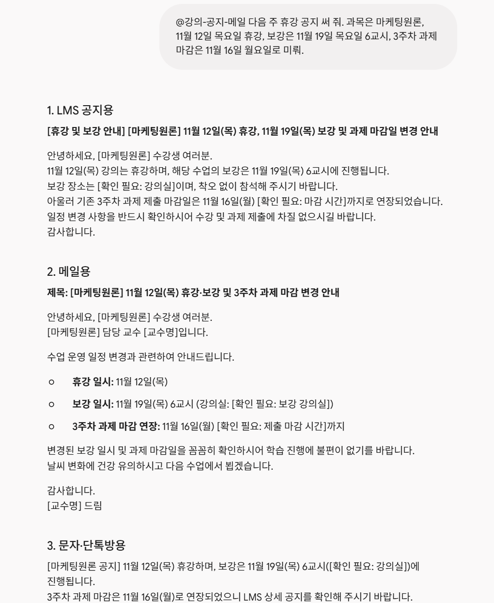
2+ 내 업무 스킬 만들기 · 교수 7종 · 교직원 5종
앞 탭에서 스킬을 받아 써 봤다면, 이번엔 내 일에 맞는 스킬을 직접 만들어요. 마음에 드는 스킬 하나를 골라 ① 만들기 프롬프트를 Gemini로 만들기에 보내 저장하고, ② 테스트 부탁문으로 바로 시험해 보세요. 테스트 자료의 이름·기관은 모두 가상이에요.
@학생-메일-답장학생 메일에 답장 초안을 써 주는 스킬을 만들고 싶어. 이름은 학생-메일-답장으로 해 줘. [언제 쓰나] 학생이 보낸 메일(성적 이의, 출석 인정 요청, 과제 마감 연장, 수강 문의 등)을 붙여 넣고 "답장 써 줘"라고 할 때. [하는 일] 1. 먼저 학생 메일의 요청 유형과 핵심 요청을 한 줄로 정리해. 2. 내가 함께 준 원칙·규정·메모(예: "연장 불가", "진단서 있으면 출석 인정")만 근거로 답장을 써. 3. 답장 초안은 두 가지로 줘: (A) 수락·부분 수락 버전 (B) 정중한 거절 버전. 내 메모에 결정이 이미 있으면 그 방향 하나만 써. 4. 마지막에 "보내기 전에 확인할 것"을 3줄 이내로 정리해. [원칙] - 규정이나 내 메모에 없는 약속(점수 조정, 추가 기회, 예외 인정)은 절대 하지 마. - 모르는 정보(학칙 조항, 날짜, 제출 방법 등)는 지어내지 말고 [확인 필요: 항목]으로 남겨. - 학생 감정에는 공감하되, 결론은 분명하게. 사과를 남발하지 마. - 학번·연락처 같은 개인정보는 답장에 다시 쓰지 마. 호칭은 "OOO 학생"으로. - 정중한 존댓말, 메일 형식(제목, 인사, 본문, 맺음말, [교수명] 드림).
@학생-메일-답장 아래 학생 메일에 답장 써 줘. 내 메모: 중간고사 채점은 루브릭대로 했고 점수 변경은 없음. 다만 채점 기준표와 본인 답안은 면담에서 보여 줄 수 있음. 면담은 다음 주 화·목 오후 3~5시 연구실. --- 제목: 경영학원론 중간고사 점수 관련 문의드립니다 교수님 안녕하세요, 경영학원론 수강 중인 경영학과 2학년 한바람(가상)입니다. 이번 중간고사 서술형 3번에서 10점 중 4점을 받았는데요, 제가 쓴 내용이 수업 자료에 나온 내용과 거의 같다고 생각해서 왜 감점이 되었는지 궁금합니다. 친구는 비슷하게 썼는데 7점을 받았다고 해서 더 혼란스럽습니다. 혹시 재채점이 가능할까요? 이번 학기 장학금이 걸려 있어서 너무 걱정됩니다. 답변 기다리겠습니다. 감사합니다.
@학생-메일-답장 아래 학생 메일에 답장 써 줘. 내 메모: 진단서·입원확인서 같은 증빙이 있으면 출석 인정. 제출은 학과 사무실이 아니라 LMS 과제함 "출석 증빙"에 PDF로. 지난주 수업 퀴즈는 대체 과제로 처리 가능. --- 교수님 안녕하세요. 데이터분석기초 수강생 행정학과 3학년 오하늘(가상)입니다. 지난주 목요일에 갑자기 아파서 수업에 못 갔습니다. 병원은 다녀왔는데 서류를 따로 받지는 않았어요. 혹시 출석 인정이 될까요? 그리고 그날 퀴즈가 있었다고 들었는데 그건 어떻게 되는지도 궁금합니다. 죄송합니다.
@학생-메일-답장 아래 학생 메일에 답장 써 줘. 내 메모: 과제 마감 연장은 원칙적으로 불가. 늦게 내면 하루당 10% 감점, 3일 넘으면 0점. 이 원칙은 강의계획서와 1주차 공지에 있음. --- 교수님, 미디어와 사회 듣고 있는 미디어커뮤니케이션학과 1학년 윤소리(가상)입니다. 이번 주 금요일 마감인 3주차 리포트를 다음 주 월요일까지 내도 될까요? 동아리 축제 준비랑 다른 과목 시험이 겹쳐서 도저히 시간이 안 납니다. 다른 친구들도 힘들다고 해서 반 전체 연장도 가능하면 좋겠습니다!
볼 것: 점수 변경·예외를 약속하지 않는지, 메모에 없는 학칙·날짜를 [확인 필요]로 남기는지, A/B 두 버전과 '보내기 전 확인할 것'이 나오는지 보세요.
@추천서-초안추천서 초안을 써 주는 스킬을 만들고 싶어. 이름은 추천서-초안으로 해 줘. [언제 쓰나] 학생이 보낸 이력(성적, 활동, 지원처)과 내 메모 몇 줄을 주고 "추천서 써 줘"라고 할 때. 대학원, 교환학생, 장학금, 취업 추천서. [하는 일] 1. 먼저 지원처·지원 분야·제출 언어를 확인해. 없으면 짧게 물어봐. 2. 내 메모에서 '내가 직접 관찰한 사실'과 '학생이 스스로 적은 이력'을 구분해 표로 정리해. 3. 추천서 초안을 써: 추천인 소개(관계·기간) → 학업 역량 → 구체적 일화 1~2개 → 인성·태도 → 종합 추천. 4. 영문을 원하면 미국식 추천서 형식(Dear Admissions Committee, …)으로 따로 써 줘. 5. 마지막에 "더 넣으면 좋은 구체적 사례" 질문을 2~3개 줘. [원칙] - 과장 금지. 메모·이력에 없는 수상, 순위(상위 1% 등), 경력은 절대 지어내지 마. - 구체적 근거 없는 칭찬 형용사(탁월한, 최고의)를 남발하지 마. 일화로 보여 줘. - 확인이 필요한 정보는 [확인 필요: 항목]으로 남겨. - 분량은 국문 A4 1쪽, 영문 400~600단어 안팎.
@추천서-초안 아래 자료로 대학원 추천서 초안 써 줘. 국문과 영문 둘 다. [지원처] OO대학교 일반대학원 데이터사이언스학과 석사과정 (가상) [학생 이력 – 학생이 보낸 것] - 이름: 정새벽(가상), 산업경영공학과 4학년 - 전체 평점 3.9/4.5, 전공 4.1/4.5 - 교내 데이터 분석 경진대회 장려상 (2026) - 학부 연구생 1년 (교수님 연구실, 설문 데이터 정제·시각화 담당) - 파이썬, R, SQL 사용 가능 [내 메모 – 직접 본 것] - 내 수업 '경영통계' 2025-2 A+. 기말 프로젝트에서 공공데이터 결측치를 혼자 끝까지 추적해 원자료 오류를 찾아냄. - 연구실에서 1년, 주 2회 성실히 나옴. 맡긴 일은 기한 전에 끝내고, 모르면 먼저 물어봄. - 발표는 다소 긴장하는 편이지만 질문에는 근거를 들어 차분히 답함. - 리더형보다는 조용히 끝까지 파고드는 연구자형.
@추천서-초안 첨부한 이력서로 대학원 추천서 초안 써 줘. 국문과 영문 둘 다. [내 메모 – 직접 본 것] - 내 수업 '경영통계' 2025-2 A+. 기말 프로젝트에서 공공데이터 결측치를 혼자 끝까지 추적해 원자료 오류를 찾아냄. - 연구실에서 1년, 주 2회 성실히 나옴. 맡긴 일은 기한 전에 끝내고, 모르면 먼저 물어봄. - 발표는 다소 긴장하는 편이지만 질문에는 근거를 들어 차분히 답함. - 리더형보다는 조용히 끝까지 파고드는 연구자형.
볼 것: 메모에 없는 업적(논문 게재, 상위 몇 %)을 지어내지 않는지, '직접 관찰'과 '학생 제출 이력'을 구분하는지, 약점(발표 긴장)을 어떻게 다루는지 보세요.
@회의록-정리회의록을 정리해 주는 스킬을 만들고 싶어. 이름은 회의록-정리로 해 줘. [언제 쓰나] 학과 회의, 교과목 협의, 위원회 회의의 메모나 녹음 받아쓰기 텍스트를 붙여 넣고 "회의록 정리해 줘"라고 할 때. [출력 양식] ## 회의록 - 회의명 / 일시 / 참석자 (메모에 있는 것만) ### 1. 결정 사항 (번호 목록, 한 줄씩) ### 2. 할 일 (표: 할 일 | 담당 | 기한) ### 3. 논의했지만 결론 안 난 것 ### 4. 다음 회의 안건 ### 5. 공유용 3줄 요약 (단톡방에 바로 붙일 수 있게) [원칙] - 메모에 없는 결정·담당자·기한은 지어내지 마. 비어 있으면 [미정] 또는 [확인 필요]로 써. - "~하면 좋겠다"는 의견과 "~하기로 했다"는 결정을 구분해. - 말투는 개조식, 존칭 생략, 사람 이름은 메모에 나온 그대로. - 잡담·중복 발언은 빼.
@회의록-정리 아래 메모로 회의록 정리해 줘. --- 11/4 학과회의 (교수 5명, 조교 1명) 회의실 302 - 학과장님: 내년 1학기 신설 과목 'AI와 비즈니스' 담당 누가? → 김교수님(가상)이 해 보겠다고 함. 강의계획서는 12월 중순까지 - 졸업작품 전시회 날짜 얘기. 12/10 vs 12/17. 학생회 의견 들어 보고 다시 정하기로 - 조교: 학과 홈페이지 공지 업데이트 너무 늦다는 학생 민원. 박교수님(가상)이 홈페이지 담당 조교를 한 명 더 두면 좋겠다고 함. 예산 문제라 결론 X - 신입생 멘토링 → 교수 1인당 8명씩 배정, 첫 면담 3월 2주 차까지 완료. 명단은 조교가 다음 주까지 메일로 - 이교수님(가상): 생성형 AI 과제 표절 기준 학과 공통으로 만들자. 다들 동의. 초안은 이교수님이, 다음 회의 때 검토 - 회식 얘기 잠깐 - 다음 회의 12/2(화) 4시
볼 것: 결정/의견을 구분하는지, 전시회 날짜를 '결론 안 난 것'으로 두는지, 메모에 없는 기한을 [확인 필요]로 남기는지 보세요.
@시험문제-출제강의 자료로 시험 문제를 만들어 주는 스킬을 만들고 싶어. 이름은 시험문제-출제로 해 줘. [언제 쓰나] 강의 자료(PDF 첨부 또는 텍스트 붙여 넣기)를 주고 "문제 만들어 줘"라고 할 때. 퀴즈, 중간·기말고사. [하는 일] 1. 문항 수와 유형을 따로 말하지 않으면 객관식 5개 + 서술형 2개로 만들어. 2. 난이도는 상·중·하를 섞고 문항마다 표시해. 3. 문항마다 정답, 해설, 출제 근거(자료의 몇 쪽 또는 어느 문단/소제목)를 붙여. 4. 서술형은 채점 기준(핵심 키워드와 부분 점수)을 함께 줘. 5. 마지막에 학생용 시험지(정답 없는 버전)를 따로 정리해. [원칙] - 자료에 없는 내용으로 문제를 내지 마. 근거를 못 찾으면 그 문항은 만들지 마. - 객관식 오답 보기는 그럴듯하되 명백히 틀린 것이어야 하고, "모두 맞다/모두 틀리다" 보기는 쓰지 마. - 단순 암기보다 이해·적용 문항을 절반 이상.
@시험문제-출제 아래 강의 자료로 퀴즈 만들어 줘. 객관식 5개, 서술형 1개. --- [강의 자료 · 경영학원론 5주차] 시장 세분화와 STP (연수 연습용) 1. 시장 세분화(Segmentation) 시장 세분화는 전체 시장을 비슷한 욕구나 특성을 가진 소비자 집단으로 나누는 과정이다. 기준은 크게 인구통계적(나이, 성별, 소득), 지리적(지역, 기후), 심리적(라이프스타일, 가치관), 행동적(구매 빈도, 충성도, 추구 혜택) 기준으로 나눈다. 2. 표적 시장 선정(Targeting) 나눈 세분 시장 중 기업이 집중할 시장을 고르는 단계이다. 세분 시장의 규모와 성장성, 경쟁 강도, 기업의 자원과 목표와의 적합성을 평가한다. 하나의 세분 시장에 집중하는 것을 집중 마케팅, 여러 세분 시장에 각기 다른 전략을 쓰는 것을 차별화 마케팅이라 한다. 3. 포지셔닝(Positioning) 표적 고객의 마음속에 경쟁 제품과 구별되는 분명한 위치를 차지하도록 하는 활동이다. 포지셔닝 맵은 고객이 중요하게 여기는 두 가지 속성을 축으로 삼아 자사와 경쟁사의 위치를 시각화한다. 4. 사례 한 커피 브랜드는 '20~30대 직장인 중 출근길에 빠르게 커피를 사는 사람'을 표적으로 정하고, '빠르고 합리적인 가격'으로 포지셔닝했다. 반면 다른 브랜드는 '여유롭게 머무는 공간'을 강조해 고가 프리미엄으로 포지셔닝했다.
⬇ [가상] 경영학원론 5주차 강의 자료 PDF (3쪽)
@시험문제-출제 첨부한 강의 자료로 퀴즈 만들어 줘. 객관식 5개, 서술형 1개. 출제 근거는 쪽 번호로 붙여 줘.
볼 것: 출제 근거가 자료의 어느 소제목인지 붙는지, 자료에 없는 개념(예: 4P)을 끌어오지 않는지, 서술형 채점 기준이 나오는지 보세요. 실제로는 강의 PDF를 ＋로 첨부해서 써요.
@강의계획서-점검강의계획서를 점검해 주는 스킬을 만들고 싶어. 이름은 강의계획서-점검으로 해 줘. [언제 쓰나] 강의계획서(PDF 첨부 또는 텍스트)를 주고 "점검해 줘"라고 할 때. [하는 일] 1. 학습목표를 번호로 뽑아 정리해. 2. 정렬 점검표를 만들어: 학습목표 | 다루는 주차 | 평가하는 방법 | 판정(○ 잘 맞음 / △ 약함 / × 빠짐). 3. 이런 문제를 찾아 줘: 평가하지 않는 목표, 목표와 무관한 평가, 주차 배분 쏠림, 평가 비율 합계 오류, 모호한 목표 동사(이해한다, 안다). 4. 고칠 점을 우선순위 3개로 제안하고, 학습목표는 측정 가능한 동사로 바꾼 예시를 줘. [원칙] - 계획서에 적힌 내용만 근거로 판단해. 추측한 건 "추정"이라고 표시해. - 교수의 수업 철학을 바꾸라고 하지 말고, 목표·내용·평가의 '일치'만 점검해. - 표 위주로 짧게.
@강의계획서-점검 아래 강의계획서 점검해 줘. --- [강의계획서] 생활 속 데이터 리터러시 (교양, 3학점, 연수 연습용 가상 계획서) ■ 학습목표 1. 데이터의 개념과 종류를 이해한다. 2. 스프레드시트로 데이터를 정리하고 간단한 그래프를 만들 수 있다. 3. 뉴스·광고 속 통계의 오류를 비판적으로 찾아낼 수 있다. 4. 데이터로 생활 속 문제를 정의하고 해결안을 발표할 수 있다. ■ 주차별 내용 1주 오리엔테이션 / 2주 데이터란 무엇인가 / 3주 데이터의 종류 / 4주 데이터 수집 방법 / 5주 데이터 윤리와 개인정보 / 6주 데이터 윤리 사례 토론 / 7주 개인정보 보호 법령 / 8주 중간고사 / 9주 스프레드시트 기초 / 10주 정렬과 필터 / 11주 함수 기초 / 12주 피벗 테이블 / 13주 그래프 만들기 / 14주 대시보드 꾸미기 / 15주 기말고사 ■ 평가 중간고사 30% (객관식, 데이터 개념·윤리) / 기말고사 40% (객관식, 스프레드시트 기능) / 출석 20% / 과제 5%
볼 것: 학습목표 3(통계 오류)·4(문제 해결 발표)를 다루는 주차와 평가가 없다는 것, 평가 합계가 95%라는 것, 윤리 주차 쏠림을 찾아내는지 보세요.
@수업-성찰-정리강의평가 주관식 응답을 정리해 주는 스킬을 만들고 싶어. 이름은 수업-성찰-정리로 해 줘.
[언제 쓰나] 학기 말 강의평가 주관식 응답이나 수업 중 받은 익명 피드백을 붙여 넣고 "정리해 줘"라고 할 때.
[출력 양식]
### 1. 한눈에 보기 (응답 수, 전반적 분위기 2줄)
### 2. 좋았던 점 (주제별로 묶고 응답 수 표시, 대표 응답 1개 인용)
### 3. 개선 요청 (주제별로 묶고 응답 수 표시, 대표 응답 1개 인용)
### 4. 다음 학기에 바꿀 점 3가지 (바로 할 수 있는 것 → 준비가 필요한 것 순)
### 5. 학생들에게 돌려줄 한 문단 ("여러분 의견을 듣고 이렇게 바꾸겠습니다")
[원칙]
- 응답에 없는 내용을 지어내지 마. 응답 수는 실제로 세서 써.
- 욕설·인신공격성 응답은 내용만 중립적으로 요약하고 원문 인용은 하지 마.
- 서로 반대되는 의견(예: 과제가 많다 vs 적당하다)은 둘 다 보여 줘.
- 학생을 특정할 수 있는 정보는 빼.@수업-성찰-정리 아래 강의평가 주관식 응답 정리해 줘. (경영통계, 2026-1학기, 연수 연습용 가상 응답) --- 1. 예제가 실제 기업 데이터라서 재밌었어요. 2. 과제가 너무 많아요. 매주 있으니까 다른 과목 할 시간이 없음 3. 교수님이 질문하면 끝까지 설명해 주셔서 좋았습니다. 4. 엑셀 실습 시간이 더 있었으면 좋겠어요. 따라가기 벅찼어요. 5. 과제 양은 적당했던 것 같아요. 매주 하니까 오히려 복습이 됨 6. 수업 자료를 미리 올려 주시면 좋겠습니다. 7. 중간고사 범위가 너무 넓었어요. 8. 실습 때 조교님이 돌아다니면서 봐 주셔서 도움 됐어요. 9. 진도가 후반에 너무 빨라졌어요. 회귀분석 부분 이해 못 함 10. 사례 위주라 통계 처음인데도 할 만했어요. 11. 자료 업로드가 수업 직전이라 프린트를 못 했어요. 12. 피드백이 빨라서 좋았어요. 13. 엑셀 단축키 정리본 있으면 좋겠어요. 14. 팀플 무임승차 문제 대책이 있었으면 좋겠습니다. 15. 수업 너무 지루함. 그냥 책 읽는 수준 16. 질문 게시판 답이 빨라서 좋았습니다. 17. 후반부 회귀분석 진도 너무 빨랐어요 ㅠ 18. 과제 피드백 덕분에 기말 준비가 쉬웠어요. 19. 실습 파일을 미리 받고 싶어요. 20. 팀 프로젝트 평가에 동료평가를 넣어 주세요.
볼 것: '과제가 많다(2)' vs '적당하다(5)'를 둘 다 보여 주는지, 응답 수를 실제로 세는지(자료 미리 올리기 6·11·19 등), 15번 같은 부정 응답을 중립적으로 다루는지 보세요.
@루브릭-만들기과제 채점 루브릭을 만들어 주는 스킬을 만들고 싶어. 이름은 루브릭-만들기로 해 줘. [언제 쓰나] 과제 안내문이나 과제 메모(주제, 분량, 목적, 학습목표)를 주고 "루브릭 만들어 줘"라고 할 때. 이미 있는 루브릭을 주고 "고쳐 줘"라고 할 때도. [하는 일] 1. 과제의 학습목표를 2~4개로 뽑고, 목표마다 평가 기준을 하나씩 정해. 기준은 3~5개. 2. 기준마다 배점을 정하고 합계가 정확히 100점(또는 내가 말한 만점)인지 계산해서 보여 줘. 3. 표로 만들어: 평가 기준(배점) | 4수준 우수 | 3수준 양호 | 2수준 보통 | 1수준 미흡. 칸마다 점수 구간(예: 18~20점)을 붙여. 4. 수준 설명은 눈으로 확인할 수 있는 행동·결과로 써(예: "근거 사례 2개 이상 제시"). "잘함, 우수함" 같은 말로만 쓰지 마. 5. 표 아래에 ① 채점 유의 사항(감점·0점 기준, 분량 미달, 표절·AI 사용 처리) ② 학생에게 미리 보여 줄 쉬운 말 버전 ③ 이 루브릭으로 채점할 때 헷갈릴 수 있는 경계 사례 2개를 붙여. 6. 기존 루브릭을 고칠 때는 문제점(목표와 안 맞음, 겹치는 기준, 측정 불가 표현, 배점 합계 오류)을 먼저 표로 짚고 고친 버전을 줘. [원칙] - 과제 안내에 없는 요구 사항(분량, 형식, 참고문헌 수)을 지어내지 마. 필요하면 [확인 필요: 항목]으로 남겨. - 한 기준에 두 가지를 섞지 마(예: 내용과 맞춤법을 한 칸에). - 이 루브릭은 rubric-grader 스킬에 그대로 넣어 채점할 수 있게, 기준 이름과 점수 구간을 분명히 써.
@루브릭-만들기 아래 과제로 100점 만점 루브릭 만들어 줘. --- [과제 메모 · 연수 연습용] 과목: 생활 속 데이터 리터러시 (교양, 1~2학년) 과제: 뉴스 기사 1개를 골라 기사 속 통계(그래프, 숫자)가 독자를 오해하게 만들 수 있는 부분을 찾아 분석하는 보고서 분량: A4 2~3쪽 목적: 통계 오류를 비판적으로 찾아내고, 바르게 고친 표현을 제안할 수 있다 조건: 기사 출처(링크) 필수, 원래 그래프 캡처 첨부, 고친 그래프나 문장 제안 포함 AI 사용: 아이디어 정리에는 허용, 본문은 직접 작성. AI 쓴 부분은 각주로 밝히기
@루브릭-만들기 아래 루브릭의 문제점을 짚고 고쳐 줘. --- [기존 루브릭 · 발표 과제 · 연수 연습용] - 내용 (40점): 내용이 좋고 충실함 - 발표 (30점): 발표를 잘함, 자신감 있음, 시간 지킴, 슬라이드 깔끔함 - 성실성 (20점): 열심히 준비함 - 질의응답 (5점): 질문에 잘 대답함
⬇ [가상] 과제 안내문 PDF (뉴스 속 통계 분석 보고서)
@루브릭-만들기 첨부한 과제 안내문으로 100점 만점 루브릭 만들어 줘. 학생용 쉬운 말 버전도 같이.
볼 것: 배점 합계를 실제로 계산하는지(고치기 예시는 95점), '잘함·좋음'을 관찰 가능한 행동으로 바꾸는지, 한 칸에 섞인 기준(발표 30점)을 나누는지, 메모에 없는 조건을 지어내지 않는지 보세요. 만든 루브릭을 @rubric-grader에 넣어 채점까지 이어 보면 좋아요.
@공문-기안대학 행정 공문(기안문)을 써 주는 스킬을 만들고 싶어. 이름은 공문-기안으로 해 줘.
[언제 쓰나] 교직원이 업무 메모(무엇을, 누구에게, 언제까지, 근거)를 주고 "기안문 써 줘", "공문으로 만들어 줘"라고 할 때.
[출력 형식]
- 수신 / (경유) / 제목
- 본문은 공문 항목 체계로: 1. → 가. → 1) → 가) 순서
- 1항은 관련 근거(관련 공문 번호·규정), 2항부터 목적·내용·협조 요청
- 일시·장소·대상·내용은 표 또는 항목으로 정리
- 끝에 "붙임 1. ○○ 1부. 끝." 형식
- 마지막에 "기안 전 확인할 것"을 3줄 이내로
[원칙]
- 메모에 없는 공문 번호, 날짜, 예산 액수, 담당자 이름은 절대 지어내지 마. [확인 필요: 항목]으로 남겨.
- 날짜는 2026. 11. 6.(금) 형식, 시간은 14:00 형식.
- 개조식, 명사형 종결("~바람", "~함"). 불필요한 미사여구 빼.
- 학교마다 양식이 다르니 수신·발신 명의는 [기관명]처럼 비워 둬.@공문-기안 아래 메모로 기안문 써 줘. --- - 전 교직원 대상 'AI 업무 활용 연수' 안내하고 참석 협조 요청 - 일시: 11월 20일 목요일 오후 2시~5시 - 장소: 본관 3층 대회의실 (노트북 지참) - 대상: 각 부서 교직원, 부서별 최소 1명 이상 참석 - 신청: 11월 14일(금)까지 부서별로 명단을 교육지원팀 메일로 - 근거: 2026 교직원 역량 강화 계획 (공문 번호 모름) - 붙임: 연수 안내문, 참석자 명단 양식
볼 것: 모르는 공문 번호를 [확인 필요]로 남기는지, 1.→가.→1) 체계와 '붙임… 끝.' 형식을 지키는지, 11월 20일 요일을 확인하는지 보세요.
@규정-근거-답변학칙이나 학사 규정을 근거로 질문에 답해 주는 스킬을 만들고 싶어. 이름은 규정-근거-답변으로 해 줘. [언제 쓰나] 규정 PDF를 첨부하거나(또는 규정이 들어 있는 노트북에서) 학생·교직원 질문을 주고 "규정상 어떻게 돼?"라고 물을 때. [출력 형식] ### 답: 한 줄 결론 (가능 / 불가 / 조건부 가능 / 규정에 없음) ### 근거: 「규정명」 제○조 제○항 원문 그대로 인용 (여러 조항이면 모두) ### 풀이: 학생에게 설명하듯 2~3문장 ### 담당·절차: 규정에 나온 신청 방법·기한·담당 부서 (없으면 [확인 필요]) [원칙] - 첨부한 규정에 있는 내용만 근거로 써. 일반 상식이나 다른 학교 규정으로 채우지 마. - 해당 조항을 못 찾으면 "규정에 없음"이라고 분명히 쓰고, 어느 부서에 확인하면 좋을지만 제안해. - 조항 번호와 인용문이 정확히 일치해야 해. 바꿔 말한 문장을 인용처럼 쓰지 마. - 여러 조항이 부딪히면 둘 다 보여 주고 "담당 부서 판단 필요"라고 써.
@규정-근거-답변 첨부한 학사 규정으로 아래 질문에 각각 답해 줘. 1. 휴학 중에 계절학기 수업을 들을 수 있나요? 2. 군 휴학 후 복학은 언제 신청해야 하나요? 3. 재수강하면 성적은 최고 몇 점까지 받을 수 있나요? 4. 계절학기도 장학금을 받을 수 있나요?
(규정 PDF를 소스로 넣어 둔 노트북 안의 채팅에서) @규정-근거-답변 이 노트북의 학사 규정으로 답해 줘. 재수강하면 성적은 최고 몇 점까지 받을 수 있나요?
@규정-근거-답변 첨부한 학사 규정으로 답해 줘. 휴학 중에 계절학기 수업을 들을 수 있나요?
볼 것: 4번처럼 규정에 없는 질문에 '규정에 없음'이라고 답하는지, 조항 번호와 인용문이 PDF와 정확히 같은지, 1번처럼 두 조항을 함께 봐야 하는 질문을 처리하는지 보세요.
@민원-응대-답변학생·학부모 민원에 답변 초안을 써 주는 스킬을 만들고 싶어. 이름은 민원-응대-답변으로 해 줘.
[언제 쓰나] 학생이나 학부모의 문의·항의 메일, 게시판 글을 붙여 넣고 "답변 써 줘"라고 할 때.
[하는 일]
1. 먼저 민원을 표로 정리해: 민원 유형 | 핵심 요구 | 감정 수준(낮음/보통/높음) | 우리가 답할 수 있는 것 | 다른 부서로 넘길 것.
2. 답변 초안을 써: 공감 한두 문장 → 사실 확인 → 처리 절차(담당 부서, 방법, 예상 기한) → 다음 연락 방법.
3. 감정 수준이 높으면 전화·면담을 먼저 제안하는 짧은 버전도 따로 줘.
4. 마지막에 "보내기 전 확인할 것"을 3줄 이내로.
[원칙]
- 내 메모에 없는 결과(환불, 배정 변경, 예외 인정)는 약속하지 마.
- 처리 기한·담당자·연락처를 모르면 [확인 필요]로 남겨.
- 책임 인정처럼 들리는 표현("저희 잘못입니다")은 사실이 확인된 경우에만.
- 학번·연락처·주소 같은 개인정보는 답변에 다시 쓰지 마.
- 정중한 존댓말, 기관 명의([부서명] 드림).
[참고 자료]
- 첨부 파일이나 노트북 소스에 민원 처리 기준·FAQ·규정이 있으면, 내 메모보다 먼저 그 자료를 근거로 써.
- 답변 아래에 "근거: 문서명 › 항목명"을 적어. 자료에 없는 기준은 지어내지 말고 [확인 필요]로 남겨.@민원-응대-답변 아래 학부모 메일에 답변 써 줘. 내 메모: 기숙사 배정은 성적·거리 점수 합산 기준, 결과 변경 불가. 대기자 순번은 생활관 행정실 문의. 추가 모집은 2월 예정(날짜 미정). --- 제목: 기숙사 배정 결과 너무 이해가 안 갑니다 안녕하세요. 이번에 신입생으로 입학하는 학생 엄마입니다(가상). 저희 집이 학교에서 차로 2시간 넘게 걸리는데 기숙사에서 떨어졌다니 말이 됩니까? 옆집 아이는 1시간 거리인데 붙었다고 합니다. 기준이 뭔지 공개도 안 하고, 전화는 계속 통화 중이고요. 당장 배정 결과 다시 확인해 주시고 오늘 안으로 연락 주세요. 안 되면 교육청에 민원 넣겠습니다.
@민원-응대-답변 아래 학생 문의에 답변 써 줘. 내 메모: 성적 장학금은 등록금 고지서에서 감면되는 방식이라 따로 입금되지 않음. 감면 내역은 포털 '등록금 고지서'에서 확인. 금액 이의는 장학팀 방문. --- 안녕하세요, 2학년 학생입니다(가상). 지난 학기 성적 장학금 대상자라고 문자를 받았는데 아직 통장에 돈이 안 들어왔어요. 언제 들어오나요? 혹시 누락된 건 아닌지 걱정됩니다.
@민원-응대-답변 첨부한 민원 응대 기준으로 아래 학부모 메일에 답변 써 줘. --- 제목: 기숙사 배정 결과 너무 이해가 안 갑니다 안녕하세요. 이번에 신입생으로 입학하는 학생 엄마입니다(가상). 저희 집이 학교에서 차로 2시간 넘게 걸리는데 기숙사에서 떨어졌다니 말이 됩니까? 옆집 아이는 1시간 거리인데 붙었다고 합니다. 기준이 뭔지 공개도 안 하고, 전화는 계속 통화 중이고요. 당장 배정 결과 다시 확인해 주시고 오늘 안으로 연락 주세요. 안 되면 교육청에 민원 넣겠습니다.
(민원 응대 기준 PDF를 소스로 넣어 둔 노트북 안의 채팅에서) @민원-응대-답변 이 노트북 자료를 근거로 아래 학생 문의에 답변 써 줘. --- 안녕하세요, 2학년 학생입니다(가상). 지난 학기 성적 장학금 대상자라고 문자를 받았는데 아직 통장에 돈이 안 들어왔어요. 언제 들어오나요? 혹시 누락된 건 아닌지 걱정됩니다.
부서마다 민원 기준·FAQ·규정을 노트북 하나에 모아 두면, 담당자가 바뀌어도 같은 기준으로 답할 수 있어요. 노트북 안에서 @스킬이 안 불러지면 노트북 안내(Instructions) 칸에 이 스킬 지침을 넣으세요.
볼 것: '결과 변경 불가'를 지키면서 감정을 다독이는지, 오늘 안 연락 같은 요구에 지킬 수 없는 약속을 하지 않는지, 2월 추가 모집 날짜를 지어내지 않는지 보세요. 참고 자료로 할 때는 답변 아래 근거: 문서명 › 항목이 붙는지, PDF의 처리 기한(3근무일·10근무일)과 점수 확인 요청 절차를 안내하는지 보세요.
@행사-계획-결과보고행사 계획서와 결과보고서를 써 주는 스킬을 만들고 싶어. 이름은 행사-계획-결과보고로 해 줘. [언제 쓰나] 행사 메모를 주고 "계획서 써 줘"라고 할 때, 그리고 행사가 끝난 뒤 실적 메모를 주고 "결과보고서로 바꿔 줘"라고 할 때. [계획서 형식] 1. 목적 2. 개요(일시, 장소, 대상, 인원) 3. 세부 일정표(시간 | 내용 | 담당) 4. 역할 분담 5. 예산 항목(항목 | 산출 근거 | 금액) 6. 홍보 계획 7. 준비 체크리스트(D-14, D-7, D-1, 당일) [결과보고서 형식] 1. 개요 2. 추진 실적(계획 대비 실제 표) 3. 성과(정량: 참석 인원·만족도 / 정성: 주요 의견) 4. 예산 집행(계획 | 집행 | 차액) 5. 문제점과 개선 방안 6. 붙임 목록 [원칙] - 메모에 없는 금액, 인원, 만족도 수치는 지어내지 마. [확인 필요]로 남겨. - 예산 합계는 직접 계산해서 맞는지 보여 줘. - 결과보고서는 계획서와 비교해 달라진 점을 반드시 표시해. - 개조식, 표 위주.
@행사-계획-결과보고 아래 메모로 행사 계획서 써 줘. --- - 행사명: 2026 교직원 AI 업무 활용 연수 - 목적: 반복 행정 업무에 생성형 AI 활용 역량 강화 - 일시: 11월 20일(목) 14:00~17:00 / 장소: 본관 3층 대회의실 - 대상: 교직원 40명 내외 - 순서: 인사말(10분) - 강의·실습(150분) - 설문(10분) - 마무리(10분) - 담당: 교육지원팀 (총괄 팀장, 실무 주무관 2명) - 예산: 강사료 50만 원, 다과 40명 x 8천 원, 인쇄물 40부 x 2천 원 - 홍보: 포털 공지, 부서별 메일
@행사-계획-결과보고 위 계획서를 아래 실적 메모로 결과보고서로 바꿔 줘. --- - 실제 참석 33명 (신청 41명) - 시간 그대로 진행, 단 실습 중 와이파이 끊김 20분 - 만족도 설문 응답 29명, 5점 만점 평균 4.4 - 주요 의견: "공문 기안 실습이 바로 쓸 만했다", "실습 시간 더 필요", "노트북 없는 사람 배려 필요" - 예산 집행: 강사료 50만 원, 다과 33명분 26만 4천 원, 인쇄물 40부 8만 원
볼 것: 예산 합계(계획 90만 원 / 집행 84만 4천 원)를 맞게 계산하는지, 신청 대비 참석률을 표시하는지, 와이파이 문제를 개선 방안으로 연결하는지 보세요.
@안내문-다국어국문 공지를 유학생용 다국어 안내문으로 바꿔 주는 스킬을 만들고 싶어. 이름은 안내문-다국어로 해 줘. [언제 쓰나] 국문 공지·안내문을 주고 "유학생용으로 바꿔 줘", "영어·중국어로 만들어 줘"라고 할 때. [하는 일] 1. 원문에서 핵심 정보를 먼저 표로 뽑아: 항목(일시, 장소, 대상, 제출물, 기한, 문의처) | 원문 값. 2. 세 가지 버전을 써: ① 쉬운 한국어(짧은 문장, 어려운 한자어는 쉬운 말로) ② 영어 ③ 중국어(간체). 3. 마지막에 대조표: 항목 | 원문 | 쉬운 한국어 | 영어 | 중국어. 날짜·시간·장소·금액이 모두 같은지 ○/× 표시. [원칙] - 원문에 없는 정보는 더하지 마. 원문이 모호하면 [확인 필요]로 남겨. - 날짜는 언어별 관례대로 쓰되 요일을 함께 써(예: Nov. 20 (Thu.), 11月20日（周四）). - 부서명·건물명은 공식 영문명을 모르면 한국어 병기(예: Student Support Team(학생지원팀)). - 기한·벌칙 같은 중요한 문장은 굵게.
@안내문-다국어 아래 공지를 유학생용으로 바꿔 줘. --- [외국인 유학생 국민건강보험 가입 및 보험료 납부 안내] 외국인 유학생은 입국 후 6개월이 지나면 국민건강보험에 당연 가입됩니다. 보험료는 매월 25일까지 납부해야 하며, 체납 시 비자 연장 등 체류 허가에 불이익이 있을 수 있습니다. 2026년 12월 학기 중 보험료 감면 신청은 11월 28일(금)까지 국제교류팀(학생회관 2층)으로 재학증명서 1부를 제출하시기 바랍니다. 문의: 국제교류팀 (내선 [확인 필요])
볼 것: 11월 28일(금) 요일을 맞게 옮기는지, 체납 불이익 같은 중요한 문장이 빠지지 않는지, 대조표에서 날짜·장소가 세 언어 모두 일치하는지 보세요.
2++ 노트북LM 채점 · 반 전체 과제를 근거로 채점
스킬은 과제를 한 편씩 같은 형식으로 채점해요. 노트북LM에는 강의자료·과제 안내·루브릭·학생 과제 10편을 한꺼번에 넣어, 반 전체를 비교하고 점수의 근거가 어느 문장인지 출처 번호로 바로 확인할 수 있어요.
| 제미나이 스킬 (2 탭) | 노트북LM (이 탭) | |
|---|---|---|
| 잘하는 것 | 같은 형식으로 한 편씩 빠르게 피드백 | 여러 자료를 근거로 반 전체를 비교하고 출처 확인 |
| 넣는 것 | 루브릭(스킬 안에 고정) + 과제 1편 | 강의자료(강의계획서) + 과제 안내 + 루브릭 + 과제 10편 |
| 언제 | 과제가 들어올 때마다 바로 | 채점 기준 점검, 공통 약점 찾기, 보충 수업 설계 |
- 내려받은 ZIP을 압축 풀기 (스킬 파일과 달리 여기서는 풀어요)
- notebooklm.google.com → 새 노트북 → 소스 추가에 한 과목 폴더의 파일을 모두 끌어다 놓기 (과목마다 노트북 하나)
- 아래 부탁문을 차례로 보내고, 답의 숫자 단추를 눌러 학생 글의 어느 문장이 근거인지 확인
1. 평가하기 · 비판적사고 노트북
강의자료·과제 안내·루브릭·학생 에세이 10편을 넣은 노트북에서 해요. 채점 → 성적 환산 → 엑셀 → 피드백 보고서까지 한 채팅창에서 이어져요.
소스의 루브릭으로 학생01~학생10의 과제를 채점해 줘. 기준마다 4·3·2·1점 중 하나를 주고 합계(16점 만점)를 내. | 학생 | 기준1 | 기준2 | 기준3 | 기준4 | 합계 | 가장 낮은 기준의 근거(학생 글 그대로 인용) | - 표의 기준 이름은 루브릭에 적힌 그대로 써. - 루브릭과 강의자료(강의계획서)에 없는 기준으로 평가하지 마. - 두 칸 사이에 걸치면 낮은 쪽을 주고 점수 옆에 "경계"라고 표시해.
📊 채점 결과를 표로 메모 저장 → 소스로 변환 → 데이터 표 학생 10명을 빠짐없이
데이터 표를 처음부터 바로 만들면 학생을 다 가져오지 못하는 경우가 있어요. 그래서 채팅으로 받은 채점 결과를 소스로 바꾼 뒤, 그 하나만 골라 표로 만들어요.
- ① 채팅 채점 결과 맨 아래 📌 메모에 저장 누르기
- ② 왼쪽 출처의 노트에 생긴 메모를 소스로 변환하고, 소스 체크는 그 메모 하나만 남기고 나머지는 모두 해제 (입력창 오른쪽에 소스 1개로 보이면 맞아요)
- ③ 오른쪽 스튜디오의 데이터 표 누르기 → 만들어진 표 오른쪽 위 ⋮ → Sheets로 내보내기로 구글 시트에 옮길 수 있어요
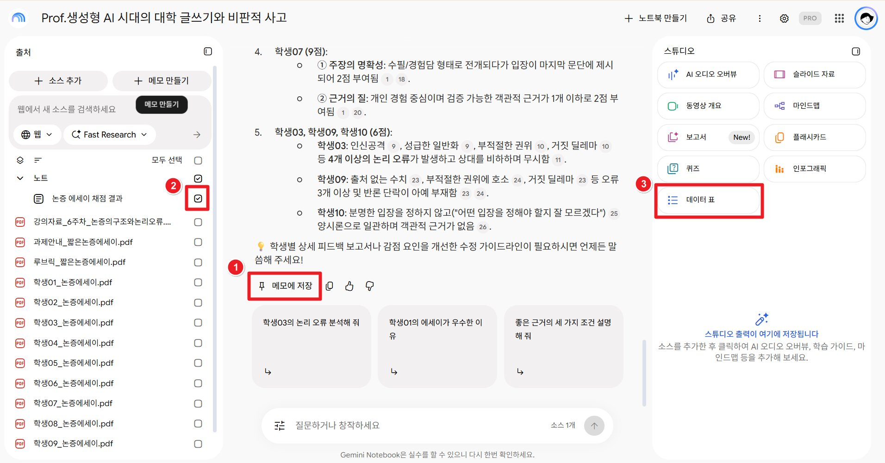
만들어진 데이터 표 — 학생별 기준 점수와 근거가 정리돼요. 오른쪽 위 ⋮ → Sheets로 내보내기를 누르면 구글 시트로 옮겨져요.
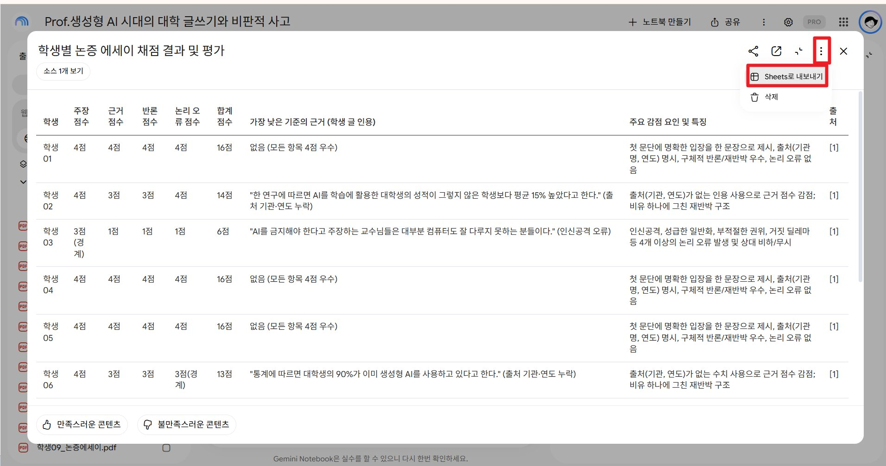
구글 시트로 옮긴 모습 — 근거가 긴 열(G·H)을 선택하고 툴바의 텍스트 줄바꿈 → 줄바꿈을 누르면 한눈에 보기 편해요. 이제 정렬하거나 점수를 직접 고칠 수 있어요.
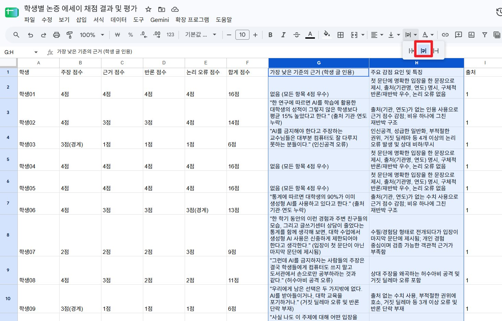
표가 나오면 학생 10명이 모두 있는지 먼저 세어 보세요.
위 채점표의 합계(16점 만점)를 성적 반영 점수로 바꿔 줘. 이 과제는 성적의 30%야. | 학생 | 합계(16점) | 100점 환산 | 30점 만점 환산 | - 100점 환산 = 합계 ÷ 16 × 100 - 30점 만점 환산 = 합계 ÷ 16 × 30 - 소수 둘째 자리에서 반올림해 줘. - 위 채점표의 합계를 그대로 쓰고, 다시 채점하지 마.
빨간 곳 네 군데만 내 과목 비율로 바꾸면 돼요. 나머지는 그대로 두세요. 20% 과제라면 어떻게 바뀌는지 아래 참고를 눌러 보세요.
참고 20% 과제라면? 눌러서 빨간 곳이 어떻게 바뀌는지 보기
위 채점표의 합계(16점 만점)를 성적 반영 점수로 바꿔 줘. 이 과제는 성적의 20%야. | 학생 | 합계(16점) | 100점 환산 | 20점 만점 환산 | - 100점 환산 = 합계 ÷ 16 × 100 - 20점 만점 환산 = 합계 ÷ 16 × 20 - 소수 둘째 자리에서 반올림해 줘. - 위 채점표의 합계를 그대로 쓰고, 다시 채점하지 마.
다른 방법 과제 안내에 적힌 비율 그대로 쓰기 · 어떤 점수를 넣을까
위 채점표의 합계(16점 만점)를 과제 안내에 적힌 평가 비율로 환산해 줘. | 학생 | 합계(16점) | 100점 환산 | 성적 반영 점수 | - 100점 환산 = 합계 ÷ 16 × 100 - 성적 반영 점수 = 합계 ÷ 16 × 평가 비율 점수 - 소수 둘째 자리에서 반올림하고, 표 아래에 쓴 평가 비율과 그 출처를 적어 줘. - 위 채점표의 합계를 그대로 쓰고, 다시 채점하지 마.
| 점수를 합치는 곳 | 넣을 점수 |
|---|---|
| 내 시트에서 직접 합산 | 30점 만점 환산 (항목을 더하면 100점) |
| LMS 성적부에 가중치(30%)를 이미 설정 | 100점 환산 (30점으로 넣으면 두 번 줄어들어요) |
실제 성적에 넣을 때는 시트 수식이 가장 정확해요. 합계가 F열이면 =ROUND(F2/16*100,1) (100점 환산), =ROUND(F2/16*30,1) (30점 만점)
"다시 채점하지 마"가 없으면 노트북LM이 처음부터 다시 채점해 합계가 바뀔 수 있어요. 결과는 한두 명만 직접 검산해 보세요 (예: 14점 → 30%면 14 ÷ 16 × 30 = 26.25 → 26.3점, 20%면 14 ÷ 16 × 20 = 17.5점).
위 채점 결과와 성적 환산 표를 엑셀 파일로 생성해 줘.
엑셀 파일(.xlsx)이 오른쪽 스튜디오에 만들어져요. 내려받아 성적 파일에 붙여 넣으면 돼요.
결과 보기 환산표와 엑셀 파일이 실제로 이렇게 나와요
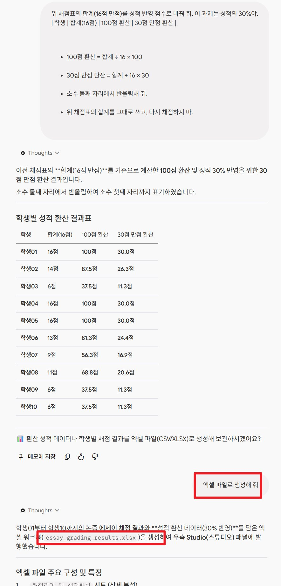
강사가 해 본 결과 계산은 모두 맞았어요(14점 → 87.5점 / 26.3점). 그래도 한두 명은 직접 검산해 보세요.
스튜디오에 엑셀 파일이 생긴 모습 — 오른쪽 스튜디오 목록에 .xlsx 파일이 생기고, 채팅에는 파일 구성이 설명돼요. 합계·환산 칸에는 수식(=SUM, =ROUND)이 들어가 있어 점수를 고치면 자동으로 다시 계산돼요.
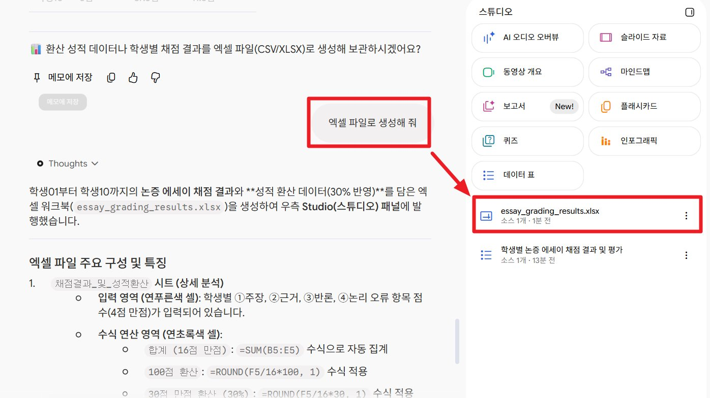
엑셀 파일 열고 내려받기 — 스튜디오의 파일을 누르면 미리보기가 열려요. 채점 점수, 합계, 100점 환산, 30점 만점 환산, 경계 표시, 근거가 한 장에 정리되고 아래에 성적 요약표 시트도 있어요. 오른쪽 위 ⋮ → 다운로드로 내 컴퓨터에 저장해요.
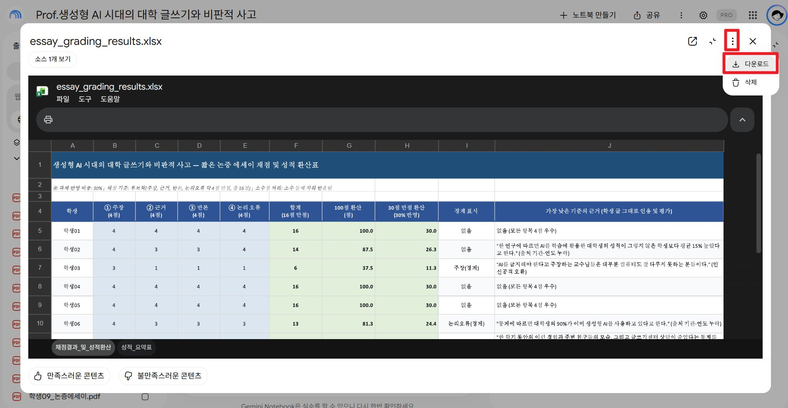
학생별 상세 피드백 보고서를 만들어 줘
보고서는 오른쪽 스튜디오에 저장돼요. 짧게 부탁해도 학생별 평가 요약, 감점 이유, 고쳐 쓰기 예시까지 정리돼요.
결과 보기 보고서와 구글 문서로 내보내기 더 자세히 부탁하는 방법도
학생01~학생10 모두에게 줄 학생별 상세 피드백 보고서를 만들어 줘. - 학생마다: 잘한 점 1개(학생 글 짧게 인용), 고칠 점 2개(루브릭 기준 번호 표시), 다음 과제에서 할 행동 1개 - 학생마다 그 학생 글에만 있는 내용으로 쓰고, 비슷한 문장을 여러 학생에게 반복하지 마. - 따뜻하지만 구체적으로. 점수는 쓰지 마. - 맨 끝에 반 전체 총평과 다음 수업 제안을 3문장으로.
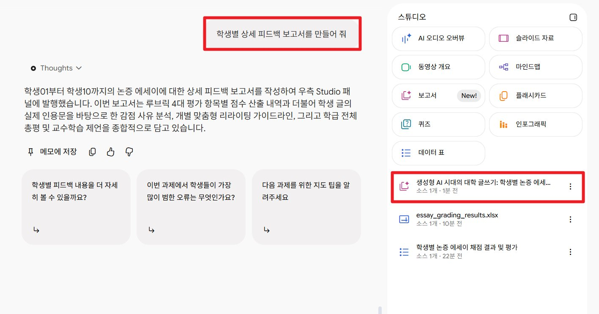
보고서 열고 내보내기 — 스튜디오의 보고서를 누르면 평가 개요, 루브릭 기준, 학생별 피드백이 정리돼 있어요. 오른쪽 위 ⋮ → Docs로 내보내기를 누르면 구글 문서로 옮겨져, 학생별로 고쳐서 나눠 주기 편해요.
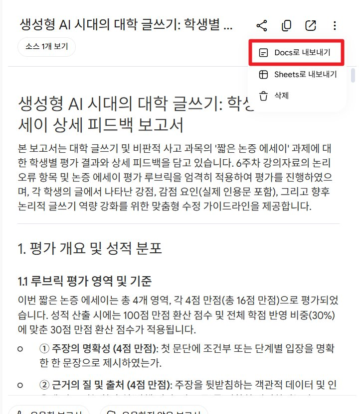
구글 문서로 옮긴 모습 — 학생마다 평가 요약, 기준별 점수, 강점, 감점 이유(원문 인용), 고쳐 쓰기 예시가 정리돼요. 여기서 학생별로 잘라 나눠 주면 돼요.
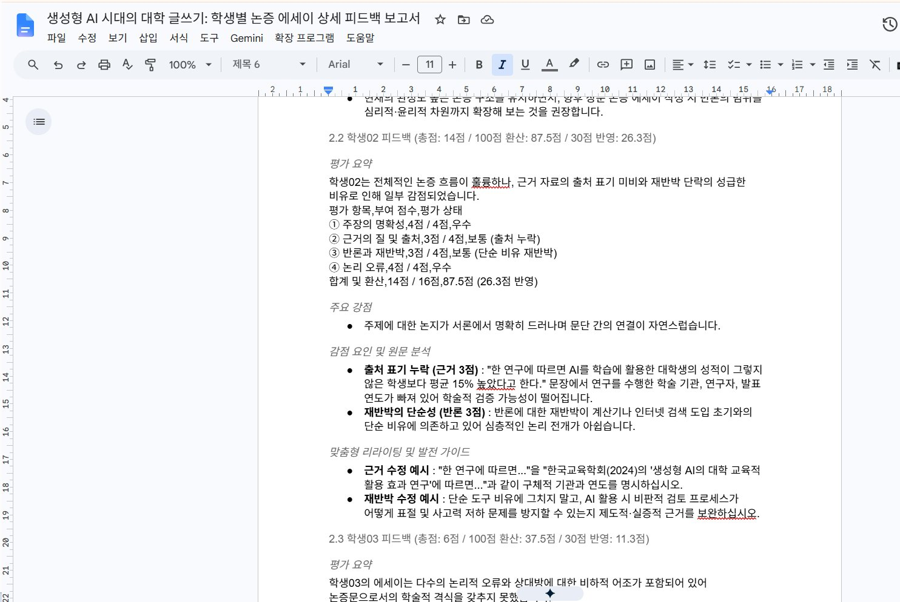
보고서는 오른쪽 스튜디오에 저장돼요. 소스가 채점 결과 메모 하나만 체크돼 있으면 학생 원문을 못 보고 메모 내용만으로 쓰니, 모두 선택으로 학생 글까지 체크한 뒤 부탁하세요. 학생에게 보내기 전에 인용문이 실제 학생 글에 있는지 꼭 확인하세요.
2. 내 루브릭 점검하고 다시 만들기 · 비판적사고 노트북
같은 노트북에서 해요. 지금 루브릭의 빈틈을 찾고 → 새로 만들고 → 비교한 뒤 → 과제 안내까지 고쳐요. 단계마다 체크할 소스가 달라요.
참고 단계마다 체크할 소스 헷갈리면 여기를 보세요
| 순서 | 번호 | 내용 | 체크할 소스 |
|---|---|---|---|
| 1 | ① | 먼저 내 루브릭의 빈틈 찾기 | 과제 안내 + 루브릭 (2개) |
| 2 | ② | 루브릭 새로 만들기 | 강의자료 + 과제 안내 (2개) |
| 3 | ③ | 내 루브릭과 비교하기 | 강의자료 + 과제 안내 + 루브릭 (3개) |
| 4 | ④ | 기존 과제 안내를 고친 안내서 PDF | 위와 같은 3개 |
입력창 오른쪽에 보이는 소스 ○개 숫자로 맞게 체크했는지 확인할 수 있어요.
과제 안내와 루브릭을 비교해서, 과제 안내에서 요구했는데 루브릭에 없는 것, 루브릭에 있는데 과제 안내에서 학생에게 알려 주지 않은 것을 표로 정리해 줘.
새로 만들기 전에 지금 루브릭이 과제 안내와 어긋나는 곳부터 찾아요. 과제 안내에서 요구했는데 루브릭으로는 평가하지 않는 것, 루브릭으로 평가하는데 학생에게 미리 알려 주지 않은 것이 표로 나와요.
결과 보기 과제 안내 vs 루브릭 빈틈
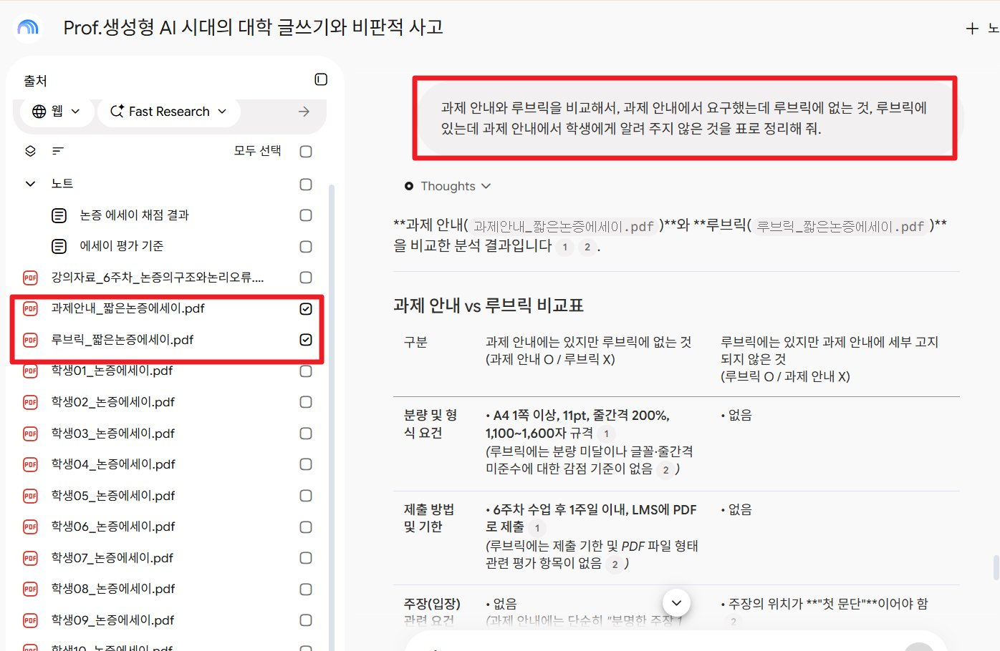
과제 안내에는 "A4 1쪽 이상" 분량 조건이 있는데 루브릭에는 분량 기준이 없고, 루브릭은 "첫 문단"에 주장을 쓰라고 하는데 과제 안내에는 그 말이 없다는 걸 찾아냈어요. 이 빈틈을 보고 나서 다음 단계에서 루브릭을 새로 만들어요.
과제 안내와 강의자료만 근거로 이 과제의 루브릭을 새로 만들어 줘. - 기준 4개, 기준마다 4·3·2·1점 칸, 칸마다 학생이 쓴 글에서 확인할 수 있는 행동으로 적어 줘. - 기준마다 근거가 된 강의자료·과제 안내 문장을 표시해 줘. - 표 아래에 학생에게 나눠 줄 쉬운 말 버전도 써 줘.
왼쪽 출처에서 강의자료·과제 안내 두 개만 체크하고 나머지(루브릭, 학생 글, 채점 메모)는 해제하세요. 루브릭이 체크돼 있으면 AI가 그대로 베낄 수 있어요. 입력창에 소스 2개로 보이면 맞아요.
결과 보기 소스 2개로 루브릭 만들기
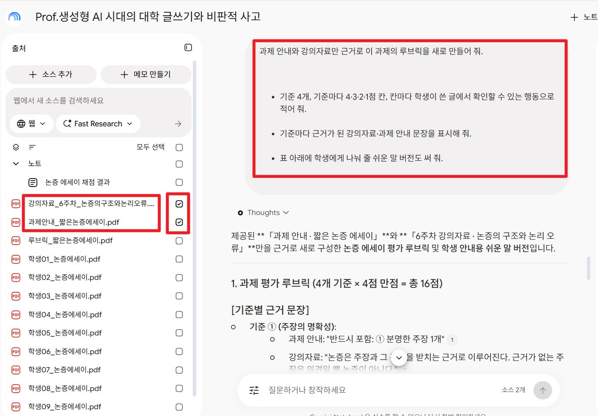
기준마다 과제 안내·강의자료의 어느 문장에서 나왔는지 숫자 단추로 표시돼요.
만들어진 루브릭 전체 — 기준별 근거 문장, 4·3·2·1점 평가표, 그리고 학생에게 나눠 줄 쉬운 말 체크리스트까지 나와요. 체크리스트는 과제를 낼 때 LMS 공지에 함께 올리면 학생이 스스로 점검할 수 있어요.
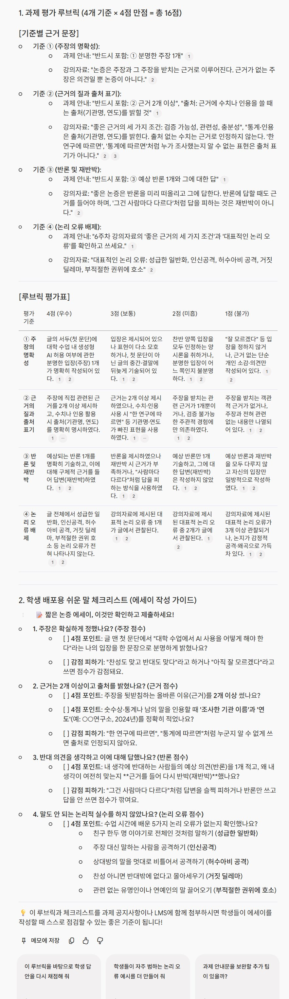
방금 만든 루브릭과 소스의 루브릭을 비교해서, 서로 다른 점과 어느 쪽이 더 분명한지 표로 정리해 줘.
같은 채팅창에서 이어서 보내세요. 왼쪽 출처에서 루브릭 파일을 체크해 강의자료·과제 안내·루브릭 소스 3개로 만든 뒤 보내요.
결과 보기 기존 루브릭 vs 새로 만든 루브릭
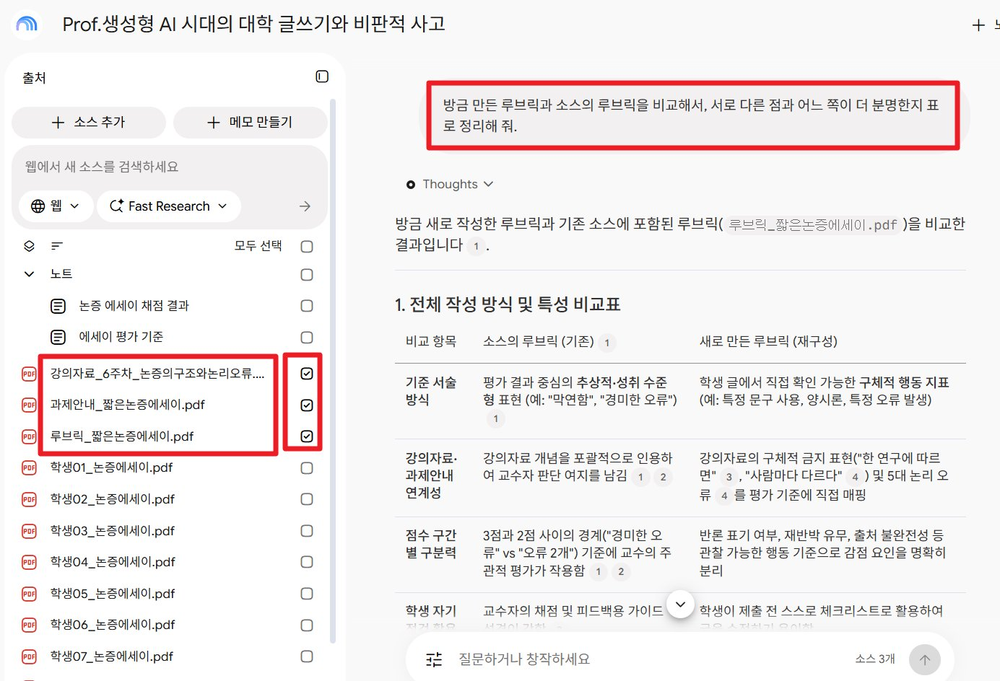
기존 루브릭은 "막연함", "경미한 오류"처럼 교수 판단에 맡기는 표현이 많고, 새 루브릭은 "한 연구에 따르면" 같은 학생 글에서 바로 확인할 수 있는 행동으로 적혀 있다고 비교해 줘요. 둘 중 좋은 표현만 골라 내 루브릭을 다듬으면 돼요.
새로 만든 루브릭으로 과제 안내서 PDF를 만들어 줘
처음부터 새로 쓰는 게 아니라, 소스에 있는 기존 과제 안내를 바탕으로 새 루브릭을 넣어 고친 안내서가 나와요. 과제 주제·분량·제출 방법은 기존 안내에서, 필수 작성 요소·출처 표기 규칙·평가표는 새 루브릭에서 가져와 과제 안내서 PDF로 오른쪽 스튜디오에 만들어져요. 내려받아 LMS 과제 공지에 첨부하면 돼요.
결과 보기 스튜디오에 생긴 과제 안내서 PDF
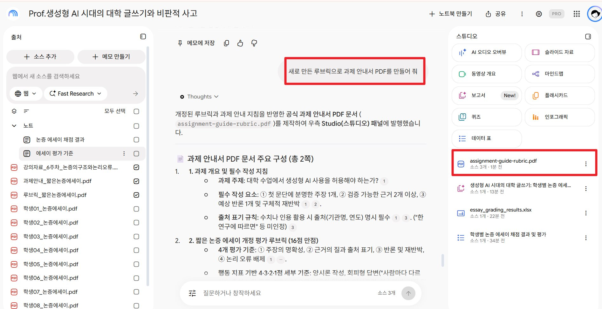
고쳐진 과제 안내서 (2쪽) — 기존 과제 안내의 내용에 새 루브릭 평가표와 출처 표기 규칙이 더해져 학생용 문서로 정리돼요. 기존 안내와 나란히 놓고 무엇이 바뀌었는지 비교해 보세요.
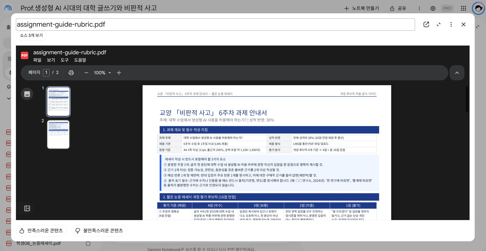
나눠 주기 전에 성적 반영 비율·분량·제출일이 내 수업과 맞는지 꼭 확인하세요. 강사가 해 보니 원래 과제 안내는 10%인데, 앞 대화에서 "30%"로 환산해 달라고 했더니 안내서에도 30%로 들어갔어요.
3. 강의계획서와 손글씨 채점 · 한국어 글쓰기 노트북
강의계획서·과제 안내·루브릭·유학생 손글씨 작문 10장을 넣은 새 노트북에서 해요. 성적 환산·엑셀·피드백은 1번 칸과 같은 방법이라 생략하고, 강의계획서와 손글씨 채점만 해 봐요. 단계마다 체크할 소스가 달라요.
강의계획서의 학습목표, 주차별 내용, 평가 방법이 서로 맞는지 표로 점검해 줘. - 어느 평가와도 연결되지 않은 학습목표, 학습목표와 연결되지 않은 평가가 있으면 표시해 줘. - 소스에 없는 내용은 지어내지 말고 [확인 필요]로 표시해 줘.
강의계획서는 학기 시작 전에 16주를 다 짜서 내요. 내기 전에 학습목표·주차·평가가 서로 맞는지 먼저 점검해요.
강의계획서 수정안을 작성해 줘.
방금 점검한 내용을 반영해 같은 형식의 수정안이 나와요. 원래 강의계획서와 나란히 놓고 무엇이 바뀌었는지 비교한 뒤, 마음에 드는 부분만 내 강의계획서에 옮기세요.
결과 보기 점검 결과와 스튜디오에 저장된 강의계획서 수정안
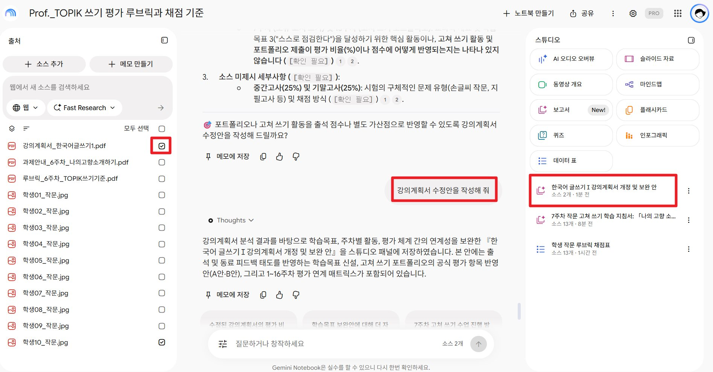
점검 결과에는 소스에 없는 내용(중간·기말고사 문제 유형, 고쳐 쓰기 포트폴리오의 반영 비율 등)이 [확인 필요]로 표시돼요. 수정안은 오른쪽 스튜디오에 보고서로 저장되고, 학습목표 보완, 평가 반영안, 1~16주차 평가 연계표가 담겨 있어요. 보고서 ⋮ → Docs로 내보내기로 구글 문서에 옮겨 다듬으면 돼요.
루브릭으로 학생01~학생10 작문을 채점해 줘. 기준마다 4·3·2·1점 중 하나를 주고 합계(16점 만점)를 내. | 학생 | ① 내용 | ② 구조 | ③-1 문법 | ③-2 어휘·맞춤법 | 합계 | 근거(학생 글 인용) | - 문법은 강의계획서 4~5주차에 배운 문법(-아서/어서, -는데, -보다)을 썼는지, 바르게 썼는지로 판단해. - 사진에서 읽기 어려운 부분이 있으면 점수 대신 "원본 확인 필요"라고 써.
성적 환산·엑셀·피드백 보고서가 필요하면 1번 칸의 ②~④ 부탁문을 같은 채팅창에서 이어서 보내면 돼요.
결과 보기 손글씨 작문 10편 채점표 (소스 13개 모두 선택)
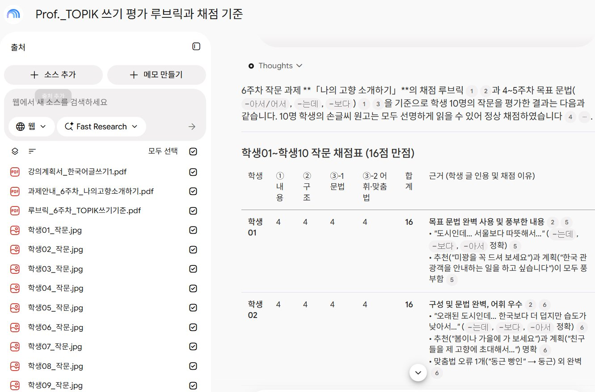
사진만 올렸는데도 기준별 점수와 학생 글 인용, 목표 문법(-는데, -보다, -아서) 사용 여부까지 정리돼요.
그런데 학생02의 근거에 "동근 빵인" → 둥근이라는 맞춤법 오류가 나와요. 학생이 실제로 쓴 글은 "둥근 빵인"이에요. AI는 맨 위에 "손글씨는 모두 선명하게 읽을 수 있어 정상 채점했다"고 했지만, 실제로는 손글씨를 잘못 읽고 학생 탓으로 적은 거예요. 그래서 아래 ⑤처럼 옮겨 적기로 한 번 확인하는 단계가 필요해요.
학생 작문 10편에서 많이 틀린 부분을 근거로, 다음 학기 강의계획서에서 고치면 좋을 주차와 내용을 3가지 제안해 줘. 제안마다 근거가 된 학생 번호와 틀린 문장을 붙여 줘.
이번 학기 평가 결과가 다음 학기 강의계획서로 이어져요. 많이 틀린 '-아서 뒤 명령·청유'(학생03·05·06·09)를 근거로 4주차를 늘리자는 제안이 나올 수 있어요.
결과 보기 학생 작문을 근거로 한 다음 학기 개정안
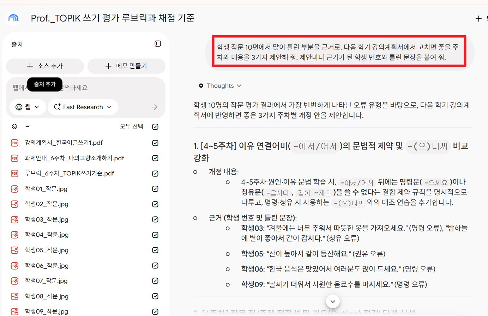
'-아서 뒤 명령·청유' 오류를 쓴 학생 03·05·06·09를 정확히 찾아 4~5주차 개정을 제안했어요. 이번 학기 평가 결과가 다음 학기 강의계획서의 근거가 되는 장면이에요.
그런데 근거로 든 틀린 문장을 원문과 비교해 보세요. 학생05·06은 실제 문장과 같지만, 학생03은 실제로 "추워서 두꺼운 옷과 장갑을 꼭 가져오세요", "날씨가 좋아서 같이 초원에 갑시다"라고 썼고, 학생09는 "날씨가 더워서 물을 많이 마시세요"라고 썼어요. AI가 오류 유형은 맞게 찾았지만 인용문은 비슷하게 지어 쓴 거예요. 근거 문장은 숫자 단추를 눌러 원본과 꼭 대조하세요.
학생10 작문 사진을 글자 그대로 옮겨 적어 줘. 틀린 글자나 띄어쓰기도 고치지 말고 보이는 대로. 읽기 어려운 글자는 [?]로 표시해 줘.
"AI가 제대로 읽었는지 먼저 확인하세요." AI가 손글씨를 잘못 읽으면 채점도 틀려요. 학생10은 셋째 줄의 첫 '등불'을 일부러 흐리게 써 두었어요.
대조용 손글씨 사진 3장 AI가 옮겨 적은 글과 비교해 보세요
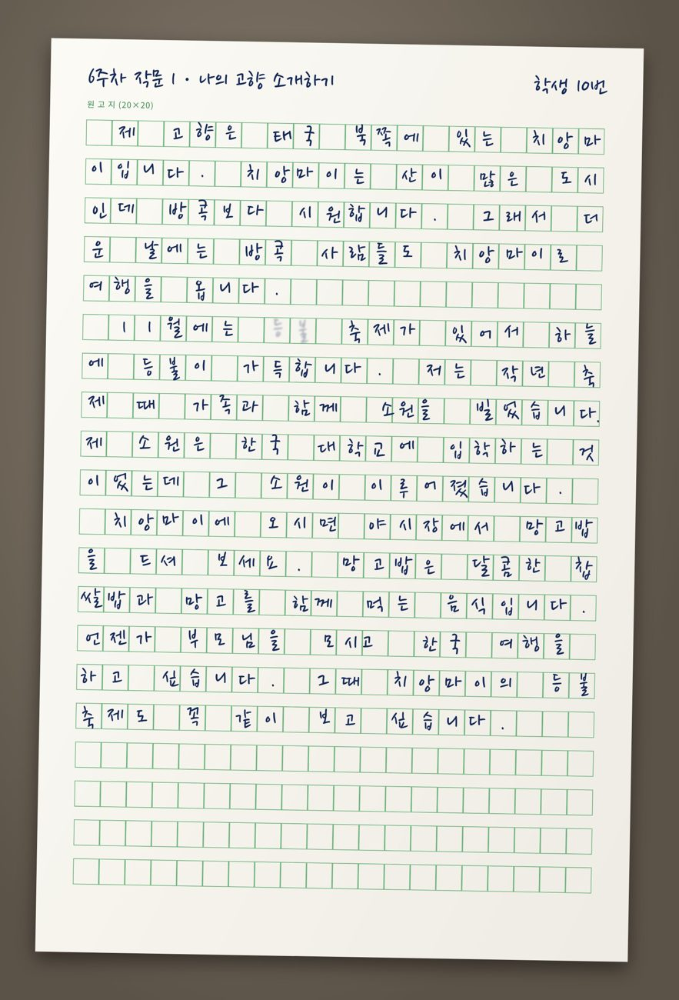
원문 (학생이 실제로 쓴 글) — 빨간 곳이 일부러 흐리게 쓴 부분이에요.
11월에는 등불 축제가 있어서 하늘에 등불이 가득합니다. 저는 작년 축제 때 가족과 함께 소원을 빌었습니다. 제 소원은 한국 대학교에 입학하는 것이었는데 그 소원이 이루어졌습니다.
치앙마이에 오시면 야시장에서 망고밥을 드셔 보세요. 망고밥은 달콤한 찹쌀밥과 망고를 함께 먹는 음식입니다. 언젠가 부모님을 모시고 한국 여행을 하고 싶습니다. 그때 치앙마이의 등불 축제도 꼭 같이 보고 싶습니다.
강사가 해 보니 흐린 '등불'도 바르게 읽었어요. 손글씨 인식이 생각보다 정확하다는 걸 보여 주는 장면이에요. 그래도 실제 과제에서는 글씨가 더 흐리거나 기울어질 수 있으니, 채점 전에 한 명쯤은 이렇게 옮겨 적기로 확인해 보세요. 읽지 못한 글자를 [?]로 표시했다면 AI가 모르는 것을 모른다고 한 좋은 결과예요.
다른 학생 2장도 함께 보세요 — 글씨체가 달라도 읽는지, 띄어쓰기와 문법 오류까지 읽어 내는지 확인해요.
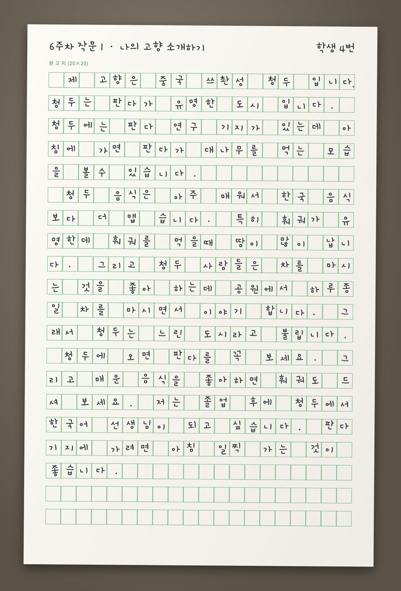
원고지 빈칸에 "청두 입니다", "도시 입니다"처럼 띄어 쓴 곳이 그대로 보여요. AI가 빈칸까지 읽어야 띄어쓰기를 채점할 수 있어요.
"추워서 … 가져오세요", "좋아서 … 갑시다"처럼 -아서 뒤에 명령·청유를 썼어요. 반 전체에서 가장 많이 나온 공통 오류예요.
2+++ 노트북LM 강의계획서 · 대진대 양식으로 15주 수업계획서 초안 만들기
대진대 수업계획서 양식을 노트북에 넣고, Deep Research로 수업할 내용을 찾아 보고서와 소스를 더한 뒤, 양식 칸 순서대로 초안을 받아요. 자료에 근거가 없는 칸은 [확인 필요]로 비워 두게 해서 교수님이 채워요.
학교 양식은 한글(hwp) 파일이라 노트북LM이 읽지 못해요. 그래서 PDF로 바꿔 두었어요. 교과목 정보, 6대 핵심역량 정의, 수업방법, 평가방법, 과제, 1~15주차 주별 수업계획 칸이 들어 있어요.
- notebooklm.google.com → 새 노트북 → 내려받은 수업계획서 양식 PDF를 소스로 올리기
- 왼쪽 출처 위의 웹에서 새 소스를 검색하세요 칸에 내 과목 주제를 적고 Deep Research와 Fast Research를 비교한 뒤, 딥리서치 보고서와 소스를 가져오기
- 아래 부탁문을 차례로 보내기 · 빨간 곳만 내 과목으로 바꾸세요
결과 보기 양식 PDF를 올린 새 노트북
양식만 올려도 노트북LM이 6대 핵심역량, 수업방법, 평가방법, 주별 수업계획 등 양식의 구성을 먼저 요약해 줘요. 이제 왼쪽 위 검색 칸에서 Deep Research로 수업 내용을 찾아 더해요.
생성형 AI 시대의 비판적 사고를 위한 대학생들을 대상으로 하는 강의를 위한 자료를 찾아줘.결과 보기 Deep Research 완료 → 보고서 펼치기
- 검색어를 적고 웹 옆 두 번째 단추를 Deep Research로 바꾼 뒤 → (5분쯤 걸려요)
- Deep Research 완료가 뜨면 오른쪽 위 펼치기 → 보고서와 자료 목록 보기 (예시: 소스 32개를 바탕으로 쓴 보고서)
- 보고서에 인용됨과 인용되지 않음 탭을 나눠 볼 수 있어요
생성형 AI 시대의 비판적 사고를 위한 대학생들을 대상으로 하는 강의를 위한 자료를 찾아줘.결과 보기 Fast Research 결과 (소스 10개)
1분 안에 국내 논문·대학 AI 가이드라인·기사 등 소스 10개가 나와요. 보고서 없이 목록과 한 줄 설명만 있어요. 비교만 하고 가져오기는 누르지 마세요. 두 결과를 같이 가져오면 소스가 섞여요.
③ 두 결과 비교하기 · 무엇이 다를까요?
- 목적
- 빠른 핵심 파악, 기초 소스 찾기
- 참조 소스
- 5~10개 내외의 주요 웹 문서 위주
- 탐색 방식
- 키워드로 한 번, 표면적인 웹 검색
- 결과물
- 자료 목록과 짧은 요약·발췌
- 이럴 때
- 사실 확인, 용어·개념 찾기, 빠른 브리핑
- 목적
- 심층 탐색, 문헌 교차 검증, 체계적인 보고서
- 참조 소스
- 20~50개 이상의 광범위한 출처 (논문, 가이드라인, 기사 등) 수집
- 탐색 방식
- AI가 계획을 세우고 꼬리를 무는 다단계 탐색
- 결과물
- 목차·인용·표·사례가 있는 완결형 보고서
- 이럴 때
- 커리큘럼 설계, 학술 연구, 제안서·강의 기획
추천 소스 해외 강의계획서·명강의를 더 넣고 싶다면 강사가 미리 찾아 둔 자료
| 종류 | 자료 | 링크 | 넣는 법·쓰임 |
|---|---|---|---|
| 해외 대학 강의계획서 | 뮌헨공과대학교(TUM) 「생성형 AI 시대의 비판적 사고」 강의계획서 (엘리자베스 실반, 2024) 원제: Critical Thinking in the Time of Generative AI | 구글 문서 열기 ↗ | 링크를 소스 추가 → 웹사이트에 붙여 넣기 |
| 해외 대학 교수법 안내 | 노스웨스턴대학교 설(Searle) 교수학습센터 「수업 운영에서의 비판적 사고와 생성형 AI」 (2025) 원제: Critical Thinking & GAI in Course Delivery | PDF 열기 ↗ | 수업 활동·평가 아이디어 |
| 해외 공개 강좌 | 미시간대학교 「생성형 AI로 비판적 사고력 기르기」 (코세라 공개 강좌) 원제: Leveraging GenAI to Develop Critical Thinking Skills | 강좌 소개 열기 ↗ | 모듈 구성을 주차 뼈대로 참고 |
| 유튜브 강의 | 하버드대학교 CS50 채널의 AI 강의 (데이비드 말란 교수) 채널에서 「CS50x 2026 – Artificial Intelligence」(2026년 1월)를 찾아 보세요 | CS50 채널 ↗ | 영상 주소를 소스 추가 → YouTube에 붙여 넣기. 자막이 있는 영상만 읽어요 |
교수님들은 보통 작년 강의계획서를 복사해 날짜·교재만 고쳐요. 여기서는 해외 대학 강의계획서와 명강의를 근거로 넣어, 내 강의를 한 단계 새로 다듬는 장면을 보여 줘요. 링크가 열리지 않거나 자료가 바뀌었을 수 있으니 연수 전에 한 번씩 열어 확인하세요.
추천 소스 링크 복사 (유튜브는 영상 한 편 주소만 들어가서 뺐어요)
https://docs.google.com/document/d/1ABHTU7cCT2CNavlQd394zFtt5lHrJ0DRf0lpJaE-xlk/edit?usp=sharing
https://searle.northwestern.edu/docs/20250909-critical-thinking-gai-course-delivery.pdf
https://www.coursera.org/learn/leveraging-genai-to-develop-critical-thinking-skills
링크로 소스 넣는 법 — 소스 추가 → 웹사이트 및 YouTube URL → 주소 붙여 넣기 → 삽입. 여러 개는 줄을 바꿔 한 번에 넣을 수 있어요. 웹페이지는 글자만, 유튜브는 자막(스크립트)만 가져와요.
강의계획서에 쓸 만한 자료를 찾는 단계예요. 해외 강의계획서를 더 찾고 싶으면 영어로도 한 번 검색해 보세요. 교재 목차나 지난 학기 강의자료가 있으면 그것도 함께 소스로 올리면 더 내 수업에 가까운 초안이 나와요.
소스의 대진대 수업계획서 양식을 칸 순서대로 채워서 「생성형 AI 시대의 비판적 사고」 수업계획서 초안을 써 줘. 이번에는 1~9번까지만 써 줘.
- 1. 수업의 개요와 유용성
- 2. 선행학습 및 선수과목 요건 → [확인 필요]로 남겨 줘.
- 3. 핵심역량 및 수업목표 → 대진대 6대 핵심역량 중 주역량 1개와 부역량 1개를 골라 비율과 수업목표를 써 줘.
- 4. 수업형태, 5. 수업방법, 6. 수업매체
- 7. 학습 평가방법 → 반영비율의 합이 100%가 되게 해 줘.
- 8. 교재 및 참고서적 → Deep Research 보고서와 가져온 소스에 실제로 있는 자료만 적어 줘.
- 9. 과제
- 양식에 이미 적혀 있는 예시 값(핵심역량 비율, 평가 반영비율 등)은 그대로 베끼지 말고 이 과목에 맞게 새로 정해 줘.
- 교과번호, 수업시간, 수업장소, 연락처처럼 소스에 근거가 없는 칸은 지어내지 말고 [확인 필요]로 남겨 줘.결과 보기 1~9번 초안
0번 CQI, 2번 선행학습, 학점·담당교수 칸이 [확인 필요]로 남았어요. 1번 개요 문장 끝의 숫자를 누르면 근거가 된 소스로 바로 가요. 왼쪽 목록에서 ⓘ 표시가 붙은 소스는 내용을 읽어 오지 못한 것이라 근거로 쓰이지 않아요.
이어서 10. 주별 수업계획(1~15주차)을 표로 써 줘. - 표의 칸은 양식대로 주차 | 수업주제 | 주요 학습내용 | 수업방식 | 선행학습 및 준비사항 | 교재 및 참고자료로 해 줘. - 주요 학습내용은 Deep Research 보고서와 가져온 소스에 있는 내용만 쓰고, '교재 및 참고자료' 칸에 근거가 된 소스 이름을 적어 줘. - 중간시험·기말시험 주차는 [확인 필요]로 표시해 줘.
결과 보기 10. 주별 수업계획 표
양식의 6개 칸 그대로 표가 나와요. 노트북LM이 중간시험을 8주차, 기말시험을 15주차로 잡고 [확인 필요]를 붙였어요. 학교 학사일정과 맞는지 꼭 확인하세요. 표가 길어서 채팅 아래로 내려 가며 봐야 해요.
연계 비교과 프로그램 항목도 마저 채워 줘. 학교 부서와 프로그램 이름은 지어내지 말고 [확인 필요]로 남겨 줘.
결과 보기 11. 연계 비교과 프로그램 · 막는 줄이 없을 때
이 줄이 없을 때 나온 결과예요. 노트북LM이 「대진대학교 교수학습개발센터(CTL)·학술정보원과 연계」라고 쓰고 프로그램 3개를 새로 지어냈어요. 소스에는 대진대 비교과 프로그램 정보가 없어요. 그래서 부탁문에 「학교 부서와 프로그램 이름은 지어내지 말고 [확인 필요]로 남겨 줘」를 넣었어요.
그러면 전체 문서를 워드파일로 완성해서 저장해줘
결과 보기 스튜디오에 저장된 워드 파일
1~11번을 모두 모은 워드 파일(.docx)이 오른쪽 스튜디오에 생겨요. 파일을 누르면 미리 보기가 열리고(예시는 8쪽), 오른쪽 위 ⋮ → 다운로드로 내려받아요. 미리 보기를 보면 기본 정보 표가 두 번 반복되어 있어요. 이렇게 겹치거나 빠진 곳이 없는지 훑어보고, 최종본은 학교 한글 양식에 옮겨 제출하세요.
완성된 워드 파일 전체 (예시 11쪽) — 기본 정보, 1~11번, 15주 표가 학교 양식 순서대로 들어 있어요. 평가 반영비율은 10·25·30·20·15%로 합이 100%예요. 8번 교재에 적힌 책과 보고서(예: Bowen & Watson 『Teaching with AI』, UNESCO 생성형 AI 지침)가 실제로 있는지, 11번 비교과 프로그램처럼 학교 사정이 들어간 칸은 직접 확인하세요. 학교에 한글 파일로 내야 하면, 한글 프로그램에서 이 워드 파일을 열고 다른 이름으로 저장을 눌러 한글 파일(.hwp)로 바꿀 수 있어요.
방금 쓴 수업계획서의 수업목표, 주별 수업계획, 평가방법이 서로 맞는지 표로 점검하고, 고치면 좋을 점 3가지를 제안해 줘.
2++ 노트북LM 채점 탭의 '강의계획서 점검 → 수정안' 부탁문도 그대로 이어서 쓸 수 있어요.
3 구글폼 → 시트 AI 오후 재료
종이·메일로 받던 일을 폼 하나로 바꾸고, 쌓인 응답을 시트에서 말로 정리합니다. 여기서 만든 폼과 시트는 오후 바이브코딩에서 “데이터가 쌓이는 곳”으로 다시 만납니다.
폼·시트의 ✦ 제미나이 기능이 안 보이면 구글 워크스페이스 랩스(실험 기능)에 가입해 두세요. 개인 구글 계정으로 로그인한 상태에서 가입하면 새 AI 기능을 먼저 써 볼 수 있어요.
🧪 워크스페이스 랩스 가입하기 ↗실습① AI로 폼 만들기
- 주소창에 form.new를 입력해 새 폼을 엽니다.
- 화면에 ✦ 제미나이로 폼 만들기(Help me create) 버튼이 있으면 눌러 아래 프롬프트를 넣습니다.
- 없으면 제미나이 앱에서 문항을 만든 뒤 하나씩 옮깁니다. (아래 “안 보이면”)
아래 네 카드 중 내 수업에 필요한 것 하나를 골라 해 보세요.
'[수업명]' [N]주차 중간 수업 피드백 설문을 만들어줘. - 이해도 1~5점 척도 1문항 - 가장 어려웠던 개념: 단답형 - 수업 속도: 객관식(느림 / 적당 / 빠름) - 개선 제안: 장문형(선택 응답) - 이름·학번은 받지 않는 익명 설문
교수 연구실 면담 전에 학생이 미리 적는 사전 질문지 폼을 만들어줘. 이름, 학과, 상담 주제(객관식: 진로 / 수업 / 과제 / 기타), 지금 가장 고민되는 점(장문형), 면담에서 꼭 듣고 싶은 것(단답형), 미리 보여 주고 싶은 자료 링크(단답형, 선택). 맨 아래에 개인정보 수집·이용 안내 문장을 한 줄 넣어줘.
'[수업명]' [N]주차 과제 제출 폼을 만들어줘. - 학번: 단답형(숫자만) - 이름: 단답형 - 과제 파일: 파일 업로드(PDF만, 최대 1개, 10MB) - AI 사용 여부: 객관식(사용 안 함 / 아이디어 정리에만 / 초안 작성에 사용) - AI를 썼다면 어디에 어떻게 썼는지: 장문형(선택) - 제출 확인: 체크박스("제출 파일이 최종본이며 본인이 작성했음을 확인합니다") 설명 칸에 제출 마감 일시를 적을 자리를 남겨줘.
- 파일 업로드 문항은 학생도 구글 로그인이 필요해요. 첫 주에 “개인 Gmail로 로그인해서 제출”이라고 안내해 두세요.
- 제출 파일은 내 드라이브에 폼 이름 폴더로 자동으로 모이고, 제출 시각·학번은 응답 시트에 정리돼요. 늦은 제출도 시각으로 바로 보여요.
- 마감이 지나면 폼의 응답 받기를 끄면 돼요.
- PDF로 받는 이유: 모인 과제를 2단원 @rubric-grader(루브릭 채점 조교)에 그대로 첨부해 채점 초안을 받을 수 있어요. 앱 스킬은 워드·한글 파일을 못 읽어요.
'[수업명]' 첫 주 학생 배경 조사 폼을 만들어줘. 수업 수준과 진도를 맞추는 데 쓸 거야.
- 학과(전공): 단답형
- 학년: 객관식(1 / 2 / 3 / 4 / 기타)
- 이 수업과 관련해 들어 본 과목: 체크박스(관련 과목 4~5개 + 없음 + 기타)
- 이 분야에 대한 나의 수준: 1~5점 척도(1 처음 접함 ~ 5 자신 있음)
- 이 수업을 신청한 이유: 객관식(전공 필수 / 관심 / 시간표 / 추천 / 기타)
- 이 수업에서 꼭 배우고 싶은 것: 장문형
- 수업에서 배려가 필요한 점(선택): 장문형 — "말하기 어려운 내용은 면담으로 알려 주세요" 안내 문장 포함
이름·학번은 받지 않는 익명 설문으로 해 줘.“들어 본 과목” 칸은 폼을 만든 뒤 내 수업의 선수 과목으로 고쳐 주세요. 응답이 모이면 다음 실습(시트)에서 “학과별·수준별로 묶어 줘”라고 물어보면 첫 수업 수준을 정할 수 있어요.
실습② 응답 받고 시트로 연결
- 오른쪽 위 미리보기(눈 모양)로 학생 화면을 확인합니다.
- 보내기 → 링크를 복사해 옆자리 동료와 서로 가상 응답 2~3건을 넣어 줍니다.
- 응답 탭 → 시트에 연결(또는 Sheets에서 보기) → 새 스프레드시트 만들기.
이 시트 주소를 오후까지 보관해 주세요. 오후에는 직접 만든 화면에서 시트로 데이터가 쌓이게 합니다.
실습③ 시트를 말로 정리하기
함수를 몰라도 됩니다. 열 이름(A, B, C…)을 짚어서 말하면 훨씬 정확합니다. 응답이 적으니 아래 가상 데이터로 연습합니다.
- sheet.new로 새 시트를 만들고, 아래 표를 복사해 A1 칸에 붙여넣기합니다.
- 시트 오른쪽 위 ✦ (Gemini) 버튼을 눌러 옆 패널을 엽니다.
- 아래 요청을 한 번에 하나씩 보냅니다.
응답일 이해도 어려운 개념 수업 속도 개선 제안 10/14 4 상관과 인과 적당 예시를 더 많이 10/14 2 회귀분석 빠름 속도를 조금 천천히 10/14 5 없음 적당 10/15 3 표본추출 빠름 실습 시간이 더 있으면 10/15 4 상관과 인과 적당 10/15 1 회귀분석 빠름 용어 정리 자료 부탁드립니다 10/16 3 회귀분석 적당 퀴즈가 도움이 됐어요 10/16 5 없음 느림 10/16 2 표본추출 빠름 중간에 질문 시간을 10/17 4 상관과 인과 적당 그래프 예시가 좋았습니다
CSV는 시트에서 파일 → 가져오기 → 업로드로 엽니다. 40건이면 그래프와 의견 묶기 결과가 더 뚜렷하게 나옵니다.
이해도 평균, 수업 속도별 응답 수, '어려운 개념'에서 가장 많이 나온 것을 요약해줘.
B열 이해도가 2 이하인 행을 연한 빨간색으로 표시해줘.
D열 수업 속도별 응답 수를 막대그래프로 만들어줘.
E열 개선 제안을 비슷한 내용끼리 묶어서 주제별로 정리하고, 다음 주 수업에서 바로 바꿀 수 있는 것 2가지를 제안해줘.
여기까지 하셨으면 충분합니다.
보너스집에서④ 매 학기 같은 정리를 버튼 한 번에 — 앱스크립트 맛보기
위에서 한 줄씩 시킨 정리를 코드 한 덩어리로 저장해 두고 ▶ 한 번으로 다시 돌리는 도구가 앱스크립트입니다. 코드는 제가 준비했고, 붙여넣고 실행만 하시면 됩니다.
- 성적_가상데이터.csv를 새 시트에 엽니다.
- 시트 메뉴 확장 프로그램 → Apps Script → 기존 코드를 지우고 성적정리_앱스크립트.gs 내용을 붙여넣고 저장합니다.
- ▶ 실행 → 권한 검토 → 내 계정 → 고급 → (프로젝트)로 이동 → 허용.
- 시트로 돌아오면 총점·학점(초안), 색 표시, 정렬, ‘요약’ 탭과 그래프가 한 번에 만들어집니다.
4 드라이브·캘린더·지메일 — 나누고, 예약받고, 정리하기
파일을 안전하게 나누는 법, 면담을 학생이 직접 예약하게 하는 법, 쌓인 메일을 @Gmail로 한 번에 정리하는 법입니다.
필수① 처음 한 번 — 구글 앱 연결 켜기
- gemini.google.com 입력창에 @를 입력합니다.
- 목록에 Gmail · Google Drive · Google Keep이 보이면 준비 완료입니다.
- 안 보이면 설정 → 앱(연결된 앱)에서 Google Workspace와 Google Keep을 켭니다.
실습② 드라이브 공유 — 보기·댓글·편집, 그리고 “사본 만들기” 링크
학생에게 양식을 나눠 줄 때, 동료와 원고를 함께 쓸 때 가장 많이 막히고 사고도 가장 많이 나는 곳입니다.
- 양식을 내려받아 drive.google.com → 새로 만들기 → 파일 업로드로 올리고, 두 번 눌러 엽니다.
- 문서 위쪽 파일 → Google 문서로 저장을 누릅니다. (워드 파일 그대로는 공동 편집·사본 링크가 불편합니다)
- 오른쪽 위 공유 → 아래쪽 일반 액세스를 “제한됨” → “링크가 있는 모든 사용자”로 바꾸고, 오른쪽 역할을 고릅니다.
| 역할 | 받은 사람이 할 수 있는 것 | 이럴 때 |
|---|---|---|
| 뷰어 | 읽기만 | 강의 자료·공지 배포 |
| 댓글 작성자 | 읽고 댓글·제안만 | 학생 초안에 피드백 받기, 동료 검토 |
| 편집자 | 내용 수정·삭제까지 | 공동 저자, 팀 공동 작업 문서 |
학생 40명에게 “각자 한 부씩” 나눠 주는 법 — 사본 만들기 링크
편집자 링크를 단톡방에 올리면 40명이 한 문서를 동시에 고치게 됩니다. 대신 주소 끝을 바꾸면, 링크를 누른 학생마다 자기 드라이브에 사본이 생깁니다.
- 일반 액세스를 뷰어로 두고 링크를 복사합니다.
- 메모장에 붙여넣고, 맨 끝의 edit… 부분을 지우고 copy로 바꿉니다.
- 옆자리 교수님과 링크를 바꿔 열어 보세요. “문서 사본을 만드시겠습니까?”가 뜨면 성공입니다.
- 성적·학생 개인정보 파일은 “링크가 있는 모든 사용자”로 열지 않습니다. 필요한 사람의 이메일만 추가합니다.
- 누가 내용을 지웠다면 파일 → 버전 기록 → 버전 기록 보기에서 이전 상태로 되돌릴 수 있습니다.
- 공유를 끝낼 땐 일반 액세스를 다시 “제한됨”으로 바꿉니다.
여기까지 하셨으면 충분합니다.
실습③ 캘린더 예약 페이지 — 면담 신청을 학생이 직접
“언제 시간 되세요?” 메일을 주고받는 대신, 가능한 시간을 열어 두면 학생이 빈 시간을 골라 직접 예약합니다. 예약되면 내 캘린더에 자동으로 들어갑니다.
- calendar.google.com → 왼쪽 위 ＋ 만들기 → 예약 일정을 고릅니다.
- 제목 “연구실 면담”, 예약 시간 20분, 가능한 시간 매주 화 14:00~16:00(반복)으로 정합니다.
- 예약 가능 기간(예: 학기 끝까지), 예약 사이 간격(예: 10분), 장소(예: 인문관 512호 또는 화상회의)를 정합니다.
- 예약 양식에서 질문을 추가합니다. 예: “학과·학번”, “상담하고 싶은 내용(한 줄)”.
- 저장 → 공유 → 예약 페이지 링크 복사. 새 탭에 붙여넣어 학생 화면을 확인합니다.
학생들에게 보낼 면담 예약 안내 공지를 5줄 이내로 써줘. 면담은 매주 화요일 14:00~16:00, 한 번에 20분이고, 아래 링크에서 직접 예약하면 된다는 내용이야. 정중하지만 짧게 써줘. 링크: [예약 페이지 링크 붙여넣기]
여기까지 하셨으면 충분합니다.
실습④ 지메일 — 쌓인 메일 정리와 답장 초안
@Gmail 에서 지난 7일 동안 받은 메일 중 '마감', '제출', '회의'가 들어간 메일을 찾아서, 해야 할 일과 기한을 표로 정리해줘.
@Gmail 에서 가장 최근 [보낸 사람 이름] 님 메일을 찾아, 정중하게 일정을 다음 주로 미루자는 답장 초안을 써줘. 보내지는 말고 초안만 보여줘.
강사 시연집에서⑤ @드라이브 — 내 문서 불러와 초안 쓰기
- 위 파일 두 개를 내려받아 drive.google.com → 새로 만들기 → 파일 업로드로 내 드라이브에 올립니다.
- 제미나이 앱에서 아래 프롬프트를 보냅니다. (파일 이름 일부만 써도 찾아 줍니다)
@Google Drive 에서 '3주차 실습과제' 문서를 찾아서, 그 내용을 바탕으로 학생에게 보낼 과제 안내문 초안을 써줘. 제출 기한, 분량, 평가 기준은 문서에 있는 그대로 쓰고, 없으면 [확인 필요]로 남겨줘.
문서 안에서 바로: doc.new로 새 문서를 열고 ✦ 버튼(또는 “나를 위해 작성”)에서 “3주차 실습 안내문 초안을 써줘”라고 요청합니다. 문서 안 제미나이는 계정에 따라 없을 수 있습니다.
집에서⑥ @킵 — 떠오른 생각을 메모로, 메모를 일로
@Google Keep 에 '기말 준비' 체크리스트 메모를 만들어줘. 항목: 시험 문항 확정, 루브릭 공유, 성적 입력 기한 확인, 강의평가 안내 공지.
@Google Keep 에서 '아이디어'가 들어간 메모를 모두 찾아서, 연구 아이디어와 수업 아이디어로 나눠 정리해줘.
2단원 앱 스킬 탭의 프롬프트 카드를 킵에 저장해 두면, 휴대폰에서도 꺼내 쓸 수 있습니다.
부서 전화번호를 킵 메모 하나로 만들어 두면, 휴대폰 킵 앱에서 바로 찾아 전화할 수 있어요. 먼저 휴대폰에 구글 킵 앱을 설치하고 같은 구글 계정으로 로그인하세요.
▶ 안드로이드 · 구글 플레이에서 받기 아이폰 · 앱 스토어에서 받기
- 학교 연락망(공지·PDF·엑셀)에서 부서 이름과 대표 번호를 복사해요. 오늘은 아래 가상 연락망으로 연습해요.
- 제미나이 앱에서 아래 부탁문을 보내면, 킵에 '학교 연락망' 메모가 라벨과 함께 생겨요.
- 휴대폰 킵 앱 → 메모를 길게 눌러 📌 고정하면 항상 맨 위에 보여요. 검색창에 “장학”, “와이파이”처럼 치면 바로 찾아져요.
- 안드로이드는 홈 화면에 킵 위젯을 놓아 두면 앱을 열지 않고도 볼 수 있어요.
@Google Keep 에 '학교 연락망' 메모를 만들어줘. 아래 연락망을 부서별로 묶고, 한 줄에 "부서 · 담당 업무 · 전화번호" 형식으로 정리해줘. 라벨은 '연락망'으로 붙여줘. [연락망 · 연수 연습용 가상 번호] 교무처 학사지원팀 031-000-1101 (휴학·복학·수강) 교무처 교수학습지원센터 031-000-1102 (강의평가·워크숍) 학생처 장학팀 031-000-1201 (교내·국가장학금) 학생처 생활관 행정실 031-000-1202 (기숙사) 학생처 학생상담센터 031-000-1203 (상담 연계) 사무처 총무팀 031-000-1301 (시설·회의실 예약) 정보전산원 헬프데스크 031-000-1401 (계정·와이파이·LMS) 산학협력단 연구지원팀 031-000-1501 (연구비·과제) 국제교류팀 031-000-1601 (유학생·교환학생) 도서관 학술정보팀 031-000-1701 (전자자료·논문 구독)
@Google Keep 의 '학교 연락망' 메모에서 와이파이나 LMS 문제는 어디에 전화하면 돼? 번호만 알려줘.
5 크롬 확장 프로그램 · 마무리
크롬에 작은 기능을 더하는 것이 확장 프로그램입니다. 많이 설치하기보다 믿을 수 있는 것 몇 개만 고르는 것이 요령입니다.
실습① 한글(HWP·HWPX) 파일을 크롬에서 바로 보기
- chrome.google.com/webstore에서 “[확인 필요: 강사 추천 HWP 뷰어 확장 이름]”을 검색해 Chrome에 추가합니다.
- 메일이나 웹에 올라온 한글 파일을 내려받지 않고 크롬에서 엽니다.
- 열린 문서에 1단원의 제미나이 패널을 그대로 써서 요약·대조합니다. (공문 두 개 비교에 특히 좋습니다)
필수② 업무에 유용한 확장·내장 기능
| 이름 | 무엇을 | 종류 |
|---|---|---|
| Google 번역 | 외국어 페이지 일부만 골라 번역 | 구글 공식 확장 |
| Google 문서 오프라인 | 인터넷이 끊겨도 문서·시트 편집 | 구글 공식 확장 |
| 읽기 모드 | 광고·메뉴 없이 본문만 크게, 소리 내어 읽기 | 크롬 내장 (⋮ → 더보기 도구) |
| 탭 그룹 | “강의 · 논문 · 학사”처럼 탭을 색깔별로 묶기 | 크롬 내장 (탭 오른쪽 클릭) |
| [확인 필요: 강사 추천 확장] | [확인 필요] | [확인 필요] |
필수③ 마무리 — 내일 할 한 가지 + 로그아웃
오늘 해 본 것 중 내일 연구실에서 한 번 더 해 볼 것 하나만 골라 킵에 적어 두세요.
- 크롬 프로필 아이콘 → 프로필 관리 → 내 프로필의 ⋮ → 삭제
- 깜빡했다면: 휴대폰에서 구글 계정 관리 → 보안 → 내 기기 → 해당 PC 로그아웃
🎁 작은 선물들
연수에서 바로 써먹는 작은 선물들을 모았어요. 앞으로 자료가 더 추가됩니다.
⌨️ 알아두면 편한 크롬 단축키8개▾
| 단축키 | 기능 | 활용 팁 |
|---|---|---|
| Ctrl + H | 방문 기록(History) 열기 | 이전에 방문했던 사이트를 빠르게 찾을 때 유용해요. |
| Ctrl + Shift + T | 닫은 탭 다시 열기 | 실수로 창을 닫았을 때 당황 금지! 여러 번 누르면 순차적으로 되살아나요. |
| Ctrl + Shift + B | 북마크바 표시/숨기기 | 화면을 넓게 써야 할 때 숨기는 ‘화면 다이어트’ 필수 기능. |
| Ctrl + Shift + V | 서식 없이 붙여넣기 | 웹사이트의 글꼴·색상을 무시하고 텍스트만 깔끔하게 붙여넣어요. |
| Shift + Enter | 프롬프트 창 내 줄바꿈 | 전송하지 않고 다음 줄로 넘어갈 때 사용해요. |
| Ctrl + J | 다운로드 목록 열기 | 방금 받은 파일을 바로 확인·열기. 어디 저장됐는지 헤맬 일 없어요. |
| Ctrl + F | 페이지 안에서 찾기 | 긴 문서·웹페이지에서 원하는 단어를 바로 찾아요. |
| Ctrl + T | 새 탭 열기 | 지금 창은 두고 새 작업을 시작할 때. |
🧩 크롬 확장 프로그램8개▾
📱 유튜브 광고 없이 보기 — 브레이브(Brave) 앱▾
휴대폰 카메라로 QR을 비추면 바로 설치 화면이 열려요.
🪟 윈도우 · 터치패드 꿀팁13개▾
크롬 밖에서도 쓰는 것들이에요. 딱 세 개만 익혀도 하루가 달라집니다 — Win+V, Win+←/→, 세 손가락.
| 단축키 | 기능 | 이럴 때 씁니다 |
|---|---|---|
| ⊞ Win + V | 클립보드 기록 — 복사한 것들이 쌓여요 | ★ 오늘의 최고 꿀팁. 공문 여기저기서 복사할 때, 하나 복사하면 앞엣것이 날아가던 스트레스가 사라집니다. 여러 개 복사해 두고 골라서 붙여넣으세요. (처음 한 번 “사용 설정” 클릭) |
| ⊞ Win + ← / → | 창을 화면 반쪽에 붙이기 | 왼쪽에 에듀파인, 오른쪽에 한글 — 보면서 옮겨 적는 일에 딱. 위/아래 키까지 쓰면 4분할도 됩니다. |
| ⊞ Win + . | 이모지·특수문자 창 | ‘ㅇ + 한자’로 ○△□ 찾던 것보다 훨씬 빨라요. ※ ☎ ▶ ✓ 같은 기호도 여기서. |
| ⊞ Win + L | 화면 잠금 | 자리 비울 때 3초. 공용 공간에서 내 화면을 지키는 가장 확실한 습관. |
| ⊞ Win + Shift + S | 화면 일부 캡처 | 1부에 배운 그 캡처예요. 캡처 후 글자 복사도 됩니다. |
| ⊞ Win + E | 파일 탐색기 열기 | 바탕화면 아이콘 찾아 헤맬 필요 없이 바로. |
| ⊞ Win + D | 바탕화면 보기 / 되돌리기 | 창이 열 개쯤 쌓였을 때 한 번에 정리. 다시 누르면 원래대로. |
| F2 | 파일·폴더 이름 바꾸기 | 우클릭 메뉴를 찾을 필요 없이 바로. 여러 개를 한꺼번에 바꾸는 것도 됩니다 → 아래 ［F2로 파일 100개 한 번에］ 참고 |
| Alt + Tab | 열린 창 사이 전환 | 꾹 누른 채 Tab을 여러 번 누르면 원하는 창까지 갈 수 있어요. |
🗂️ F2로 파일 100개 이름 한 번에 바꾸기 — 스캔 파일 정리할 때▾
- 파일 탐색기(⊞ Win+E)에서 그 폴더를 엽니다
- 바꿀 파일을 모두 선택 — 전부라면 Ctrl+A, 골라서라면 Ctrl을 누른 채 클릭
- F2를 누릅니다 — 맨 위 파일 이름만 편집 상태가 됩니다 (정상이에요)
- 원하는 이름을 치고 Enter — 예: 2026교복입찰_견적서
| 바꾸기 전 | 바꾼 뒤 |
|---|---|
| SCAN0001.jpg | 2026교복입찰_견적서.jpg |
| SCAN0002.jpg | 2026교복입찰_견적서 (1).jpg |
| SCAN0003.jpg | 2026교복입찰_견적서 (2).jpg |
| SCAN0004.jpg | 2026교복입찰_견적서 (3).jpg |
🖐️ 노트북 터치패드 — 손가락 세 개면 됩니다▾
마우스를 안 챙긴 날, 이거 하나면 버팁니다. 터치패드 위에 손가락 세 개를 올리고 쓸어보세요.
창이 잔뜩 쌓였을 때 한눈에 펼쳐서 고릅니다. (Win+Tab과 같아요)
다시 아래로 쓸면 원래 창으로 돌아옵니다.
Alt+Tab을 손가락으로. 한글 ↔ 에듀파인 오갈 때 제일 빨라요.
파일이든 프로그램이든 이름만 치면 바로 찾아줍니다.
업무용 화면과 자료 화면을 통째로 나눠 씁니다.
먼저 바탕화면을 하나 더 만들어야 넘어갈 데가 생겨요 → 아래 설명
위아래로 쓸면 스크롤, 오므리고 벌리면 확대·축소.
🖥️ 네 손가락이 아무 반응이 없다면? — 가상 데스크톱 만들기·문제 해결▾
- ⊞ Win+Ctrl+D — 새 바탕화면 만들기 (화면이 휙 넘어가면 성공)
- 이제 네 손가락으로 좌·우를 쓸어 보세요. 키보드로는 ⊞ Win+Ctrl+←/→
- 지금 몇 개인지 보려면 ⊞ Win+Tab — 화면 위에 바탕화면 목록이 뜹니다
- 필요 없어지면 ⊞ Win+Ctrl+F4 — 그 바탕화면만 닫히고 창은 옆으로 옮겨져요 (프로그램은 안 꺼집니다)
🚫 터치패드가 아예 안 움직인다면 — 다시 켜는 법▾
삼성 갤럭시북·LG 그램은 대개 Fn+F5, 기종에 따라 F6·F7일 수도 있어요.
- ⊞ Win+I로 설정 열기
- Bluetooth 및 장치 → 터치패드
- 맨 위 ［터치패드］ 스위치를 «켬»으로
같은 터치패드 화면에서 ［터치패드］ 옆 화살표(∨)를 펼쳐 「마우스가 연결되어 있을 때 터치패드 켜 놓기」에 체크하세요.
⊞ Win을 누르고 터치패드라고 친 뒤 Enter → Tab·방향키로 이동, Space로 스위치를 켭니다.
⚡ 구글 “.new” 마법 주소 — 주소창에 치면 바로 새 문서9개▾
파일을 만들려고 드라이브 → 새로 만들기 → … 를 거칠 필요가 없어요. 주소창에 아래를 치고 Enter만 하면 그 자리에서 새 문서가 열립니다. 1부에 배운 form.new·doc.new가 바로 이거예요.
🌐 알아두면 좋은 유용한 사이트13개▾
🔲 나인닷(⋮⋮⋮) 속 숨은 도구들 — 이미 쓸 수 있는데 안 눌러본 것11개▾
구글 화면 오른쪽 위 점 아홉 개(⋮⋮⋮)를 누르면 나오는 그 목록이에요. Gmail·드라이브·캘린더만 쓰고 지나치기 쉬운데, 행정 업무에 바로 걸리는 것들이 숨어 있습니다. 전부 개인계정 무료예요.
📈 이 중 하나만 고르라면 — Looker Studio▾
숫자가 바뀌면 다시 만들어야 합니다
시트만 고치면 알아서 바뀝니다
🔔 Google 알리미, 이렇게 씁니다▾
🤖 한 걸음 더 — 워크스페이스 스튜디오 (코딩 없는 자동화)▾
✨ 구글이 만든 AI 도구 — 더 해보고 싶다면14개▾
연수에서 다 못 다룬 구글의 AI 도구들이에요. 대부분 무료고, 개인 구글계정으로 바로 들어갑니다. 보너스 탭에서 해본 구글 Flow도 여기 식구예요.
🔬 조금 더 깊숙이 — 구글 실험실 & 특화 AI 도구 7개▾
행정 업무에 바로 쓰는 건 아니지만, “AI가 어디까지 하나” 궁금하신 분을 위한 목록이에요. 아직 실험 단계라 지역·기기 제한이 있는 것도 있습니다.
현장에서 막히는 부분이 생기면 언제든 편하게 연락 주세요. 함께 해결해 드리겠습니다. 😊
Gemini Certified Educator